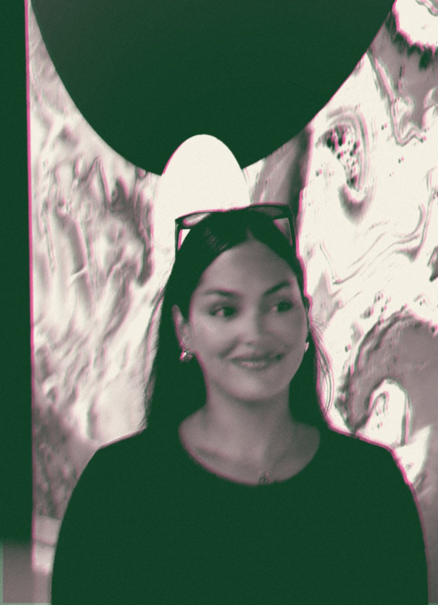

The basics
What's a Birth Chart, Really?
The most honest selfie you'll ever take, no camera required.
Read →Pull up a chair. I read the sky you were born under, over a coffee, tea, or drink of your choice. In person in Tallinn, or online from anywhere.
Every reading is a real conversation, your chart on the table, a drink in hand, no jargon. Just what the sky actually means for you.
Your cosmic blueprint, neat. I read the chart you were born under, the energies you arrived with and the natural gifts wired into you from the very start.
✦ Your 10-page birth-chart report, included €120Once a year the sun returns to where it began, your birthday. I map the themes, lessons and flavors of your next trip around: a personal forecast for the year ahead.
✦ Your 10-page year-ahead report, included €85Two charts, side by side. I look at how your energies blend with someone else's, the chemistry, the friction, and the notes that make it work.
✦ Your 10-page compatibility report, included €95No cosmic homework, no jargon to learn first. You bring your birth details and your questions, I bring the chart and the conversation.
Pick in person in Tallinn or online from anywhere, choose a time that suits you, and tell me which reading you're after.
Send your birth date, time and city. I draw up your chart and study it properly before we ever sit down.
We meet over a drink and I walk you through your sky, what it means for you, in plain language, with room for all your questions.
Drop in when and where you were born and we'll pour you the basics, your Sun, Moon and Rising. It's the first sip; the full story comes in a reading.
no time? no worries, we'll still get your Sun ☉
What the sky's serving right now, poured straight from where the planets actually are. The same sky that's over your cup.
A little taste of how two charts blend, your core, your love, your spark, side by side. Just a sip; the full pour is a Perfect Pairing reading over a drink.
Spiritual and practical were never opposites. My whole job is bringing one down to meet the other.I bring the practical to the spiritual · MD
your astrologer, over a good coffee ✦
I'm from Venezuela, and I fell for astrology at twelve years old. For nearly two decades it's been the lens I see the world, and myself, through.
It got serious in 2020. When the world stopped and we were all forced to look inward and face what we'd kept in storage, I had a deep need to understand myself: who am I, and what's my purpose here? Astrology became the tool that actually answered it.
Since then I've helped many, many people get to know themselves better, find a real sense of agency over their path, and understand the gifts they were born with and the energies available to them.
Every reading happens the way it should, over a coffee, tea, or drink of your choice. In person in Tallinn, or online from wherever you are.
see you under the stars, MD ✦

the sky moves slow, the coffee moves faster
Astrology in plain language, what your chart, the planets, and the moon actually mean for real life. New notes added often.
The most honest selfie you'll ever take, no camera required.
Read →The most dramatic glow-up of your life is on a schedule.
Read →The internet's favorite scapegoat, minus the panic.
Read →The placement everyone's obsessed with, it points at your purpose.
Read →The 'where should I live' map taking over your feed.
Read →Why you're tired in a way sleep doesn't fix, and how you're built to refill.
Read →Spoiler: it's written in your Venus and Mars, and more fixable than your ex.
Read →Signs are the flavor. Planets are the guests. Houses are the rooms it happens in.
Read →The wound you didn't choose became the medicine only you can give.
Read →Your sun sign gets the spotlight, but your moon runs your whole inner world.
Read →The planet of abundance has claimed a spot in your chart, here's where it's been quietly growing you.
Read →Not a planet, not a vibe, the point in your chart that holds everything you were taught to hide.
Read →Moon journaling, lunar baths, resting on purpose, why living softly became peak feminine energy.
Read →Venus is how you love. Mars is what you want. Here is what your Mars sign says about your desire, your drive, and how you go after things.
Read →The most private room in your chart holds everything about your roots, your family, and what home really means to your nervous system.
Read →Everything you might be wondering before you book. Still curious about something? Just email me.
For your full chart, including your Moon and Rising, yes, even an approximate time helps a lot. Without it I can still read your Sun and the slower planets. Check your birth certificate, or tell me a rough range and we'll work with it.
In Tallinn, over a coffee, tea, or drink of your choice, I'll share the spot when you book. Not in Tallinn? I read for people anywhere in the world over video, and it's just as personal.
English and Spanish, whichever feels more like home to you. Just let me know when you book.
More than okay, it's my favourite kind of reading. Everything is in plain language, no symbols to memorise beforehand. You bring yourself and your questions; I bring the map.
Bring three things: your birth date, your birth time, and your birth city, plus whatever questions are on your mind. That's all I need to read your sky.
New to your chart? Start with the House Blend your full birth chart. Curious about the year ahead? The Refill reads your solar return. Wondering about a relationship? Perfect Pairing looks at two charts together.
Pick where you'd like to meet, choose a time, and tell me which reading you're after. I'll bring the chart, you bring the questions.
① Reserve your reading: pay securely via PayPal
② Then pick your time below ↓
🔒 Pay via PayPal to reserve, then choose your time below. Your spot is confirmed once payment lands, and your tailored chart report is included.
Think of it as the most honest selfie you'll ever take, no camera required.
People hear "birth chart" and picture something complicated: a wheel covered in symbols, lines crossing everywhere, a language only your weird-in-a-good-way friend speaks. I get it. The first time I saw mine, at twelve, it looked like a circuit board. But here's the secret nobody tells you: a birth chart isn't complicated. It's just you, written in the oldest language we have.
So let's pour a cup and actually break it down.
Your birth chart is a map of exactly where every planet was at the precise moment you took your first breath, seen from the exact spot on Earth where you were born. That's it. It's a photograph of the sky at your hello.
This is why I always ask for three things: your birth date, your birth time, and your birth place. The date tells me roughly where the Sun and planets were. The time and place pin down the rest, especially your Rising sign, which shifts about every two hours. Two people born on the same day can feel like completely different humans, and that gap usually lives in the time and place. A few minutes can move your whole chart. That's not a flaw. That's the point: there has never been another sky exactly like yours, and there never will be again.
Once you stop seeing the chart as one big intimidating wheel and start seeing its three ingredients, the whole thing clicks open.
Planets are the what. Each one represents a part of you. The Sun is your core, your essence, the thing you're here to grow into. The Moon is your inner world, your feelings, your needs, what makes you feel safe. Mercury runs your mind and how you communicate. Venus handles love, beauty, and what you find pleasurable. Mars is your drive, your fire, how you go after things. And so on through Jupiter, Saturn, and the slower outer planets. Think of the planets as the cast of characters living inside you.
Signs are the how. A planet tells you which part of you we're talking about; the sign tells you the flavor it comes in. Mars in Aries goes after things head-on, fast and direct. Mars in Pisces goes after things sideways, through feeling and intuition. Same drive, completely different style. The twelve signs are like twelve different ways of doing the same thing.
Houses are the where. This is the part most people skip, and it's the part that makes a chart feel like your life and not a horoscope generator. The houses are twelve areas of life, your identity, your money, your relationships, your home, your career, and so on. They tell you where all this energy actually plays out. Venus might tell us you love beautifully; the house it sits in tells us whether that shows up most in your friendships, your work, or your private life.
Put it together and a single placement reads like a sentence: what part of you (planet), in what style (sign), shows up where (house). String those sentences together and you get a paragraph. String the paragraphs together and you get a person. You.
If a full chart feels like a lot, start with what we call the Big Three, your Sun, Moon, and Rising. People love to reduce themselves to "I'm a Leo," but that's only your Sun, which is one third of the headline.
Your Sun is who you're becoming, your purpose, your vitality, the role you're growing into across a lifetime. Your Moon is who you are when no one's watching, your emotional baseline, the thing that needs tending. Your Rising is your front door, the energy people meet first, the lens you look out through, the vibe before you've said a word. When someone says "you don't seem like a Capricorn," they're usually reacting to a Rising that tells a different story than the Sun.
Get those three and you already understand yourself better than most "what's your sign" small talk ever will.
Let me be clear about something, because this is where astrology gets a bad reputation. Your chart is not a script. It doesn't tell you what will happen, and it definitely doesn't lock you into a fate you can't change. I don't read charts to predict your doom. I read them to hand you a mirror.
A birth chart shows you the energies you were born into, your natural gifts, your patterns, the places you tend to get stuck, the medicine that tends to help. What you do with all that is entirely yours. Two people with the same placement can live it out completely differently: one runs from it, one builds a whole life on it. The chart doesn't decide. You do. That's the whole reason I fell in love with this work, it gives people back a sense of agency, not the opposite.
Because most of us spend years trying to figure out why we are the way we are. Why you need so much alone time and your best friend doesn't. Why you keep choosing the same kind of person. Why a "normal" job quietly drains you. The chart won't make those things disappear, but it will explain them, gently, and usually with a wave of relief. Oh. I'm not broken. I'm built like this. And here's what to do with it.
That's what a reading is, really. Not a fortune. A conversation about who you already are, over a drink, with someone who's fluent in the language of your sky.
When you're ready to actually read yours, that's what the House Blend is for. ✦
"What's your big three?" is the new "what's your sign", here's how to actually answer it.
If you've spent any time on the astrology side of the internet, you've seen it: someone asks "what's your big three?" and everyone in the comments fires back three signs like a secret handshake. Leo sun, Pisces moon, Scorpio rising. It's become the go-to introduction, and honestly, it's a much better one than just your sun sign. Because your Big Three is the difference between a one-word summary and an actual headline of who you are.
So let's decode it, so next time someone asks, you don't just know your three signs, you know what they mean.
Here's the thing the "I'm a Gemini" era got wrong: your sun sign is one ingredient, not the whole recipe. Reducing yourself to it is like describing a song by its title and skipping the actual music. Your Big Three, Sun, Moon, and Rising, captures the three most personal, fast-moving, identity-shaping points in your entire chart. Together they explain about 80% of why you feel like you and not like the horoscope app's idea of your sign.
Each one answers a different question. The Sun: who am I at my core? The Moon: what do I feel and need? The Rising: how do I show up? Get all three and suddenly the contradictions in your personality stop being contradictions and start being a chart.
Your Sun sign is the one you already know, it's based on your birth date, and it's where the Sun was when you were born. But it's deeper than the meme version. Your Sun is your essence: your ego in the healthy sense, your vitality, the thing you're here to grow into and shine as over a lifetime.
Think of it as your story's main character. It's not the whole personality, it's the central drive, the role you're learning to fully inhabit. A Capricorn Sun is here to build and master something. A Sagittarius Sun is here to seek and expand. When people say "be yourself," your Sun is the self they mean. It's the part of you that feels most on when you're living it out loud.
If your Sun is who you are in the daylight, your Moon is who you are at 2am. It's your emotional core, your feelings, your instincts, your needs, the things that make you feel safe and soothed. The Moon is private. Most people never see it unless they get close to you.
This is the placement that explains your reactions. Why one person needs to talk through every feeling and another needs to disappear into a quiet room. Why you feel cared for by being fed, or by being left alone, or by being told the plan. A Cancer Moon needs emotional safety and home. An Aquarius Moon needs space and freedom to feel okay. Your Moon is also, quietly, how you learned to be comforted as a child, which is why understanding it can feel like meeting a part of yourself you'd never quite explained.
If you want the most useful self-care information in your whole chart, it's here. Your Moon tells you what you actually need to refill.
Your Rising sign, your Ascendant, is the sign that was coming over the horizon when you were born, and it changes roughly every two hours, which is why your birth time matters so much. The Rising is what people meet first: your vibe, your style, your body language, the energy you give off before you've said a word.
It's also the lens you see the world through, and the frame your entire chart is built around. A Libra Rising arrives gracious and charming. An Aries Rising arrives ready to go. A Capricorn Rising reads as composed and capable even when they're internally chaos. This is why people sometimes say "you don't seem like your sign", they're meeting your Rising, not your Sun.
Here's where it gets fun, because the magic is in the combination. Your Big Three is a little ecosystem, and the interplay is what makes you specific.
Picture an Aries Sun, Pisces Moon, Capricorn Rising. On the outside: cool, composed, got-it-together (Capricorn Rising). At their core: bold, driven, a little impatient (Aries Sun). On the inside, where no one sees: dreamy, sensitive, deeply feeling (Pisces Moon). That's a person who comes across as the unbothered boss, runs on fire and ambition, and quietly cries at commercials. None of that is a contradiction once you can see all three layers at once.
That's the whole gift of the Big Three: it holds your complexity. You're allowed to be the confident one who's secretly soft, the wild one who's secretly disciplined, the quiet one with a roaring inner world. The chart expected it.
First, find them, you need your birth date, time, and place (there's a free calculator right here on this site that'll give you all three). Then read them as a sentence: I'm a [Sun] at my core, I feel like a [Moon] underneath, and I meet the world as a [Rising]. Sit with how true that lands. Most people get a little chill of recognition.
Then use it. Lead with your Sun when you want to feel alive. Tend to your Moon when you're depleted. Work with your Rising when you want to understand how you come across. It's a surprisingly practical operating manual once you stop treating it like a party trick.
And when you're ready to go past the headline into the full story, the other planets, the houses, the whole beautiful map, that's what a House Blend reading is for. Your Big Three is the introduction. There's a whole person behind it, and getting to know them is the best conversation you'll have all year. ✦
Your chart's front door, the vibe before you've said a single word.
You know how some people feel like sunshine the second they walk in, and others feel like a quiet mystery you want to figure out? A lot of that first impression, the energy people pick up before they know a thing about you, lives in one specific corner of your chart: your Rising sign. And it might be the most underrated placement of them all.
If you've only ever known your "sign" as your Sun sign, your Rising is the plot twist that explains why you've never quite felt like the horoscope said you should.
Your Rising sign, also called your Ascendant, is the zodiac sign that was climbing over the eastern horizon at the exact moment and place you were born. As the Earth turns, a new sign rises roughly every two hours. So while your Sun sign only needs your birth date, your Rising needs your birth time and place to pin down. Miss the time by a couple of hours and your whole front door changes.
This is exactly why I'm so insistent about birth times. Two people born on the same day can come across as completely different humans, and the Rising sign is usually where that difference begins. The Sun is who you are. The Rising is how you arrive.
I like to call the Rising your front door, because it works in both directions.
Looking in, it's what people meet first, your aura, your style, your body language, the immediate read someone gets across a room. It shapes how you come across before your personality has had a chance to explain itself. A Leo Rising tends to walk in warm and magnetic; a Scorpio Rising arrives with a little intensity and mystery; a Libra Rising radiates easy charm. None of that is the whole person, it's the doorway you walk through to reach them.
Looking out, your Rising is the lens you see the world through. It colors your instincts, your default approach to new situations, the filter on your whole experience. An Aries Rising meets life ready to move; a Cancer Rising meets it feeling first. It's so foundational that astrologers build the entire chart around it, your Rising sets where every other planet and house falls. It's the frame the rest of your picture hangs in.
Ever had someone insist you don't seem like a Capricorn, or that you're "too soft" to be a Scorpio? Nine times out of ten, they're reacting to your Rising, not your Sun.
Say your Sun is in serious, ambitious Capricorn but your Rising is bubbly Gemini. People meet the chatty, curious, quick-witted Gemini energy first, so "you don't seem like a Capricorn" makes total sense. They're meeting your front door before they've seen the whole house. Your Sun is still running the show on the inside; it just isn't the first thing on display.
This is the single most common source of "astrology doesn't fit me" confusion. People read one-twelfth of themselves, the Sun, and wonder why it's only half-right. The Rising fills in a huge piece of the gap.
Beyond the "oh, that's why" relief, knowing your Rising is genuinely useful.
It explains how you come across which is gold if there's ever a gap between how you feel inside and how people treat you. Maybe you feel shy but read as intimidating (hello, certain Risings). Knowing this lets you work with your first impression instead of being baffled by it.
It tells you which horoscope to actually read. Here's an insider tip most people never learn: when you read a horoscope, you'll often get more accurate, relevant information reading for your Rising sign than your Sun. That's because horoscopes are built on the houses, and your Rising is what anchors your houses. Try it, read for your Rising and watch how much more it lands.
It grounds your whole chart. Once you know your Rising, every other placement gets a location. Your Venus isn't just "in Taurus", it's in a specific house, a specific area of life, and that's determined by your Rising. It's the difference between knowing you love beautifully and knowing exactly where in your life that shows up.
Here's the gentle truth I always come back to: your Rising is real, but it's a doorway, not the destination. The magnetic Leo Rising might be deeply private once you're inside. The intense Scorpio Rising might be the softest person you'll ever meet. The bubbly Gemini Rising might carry a quiet, serious Capricorn core. The front door is honest, but it's an introduction, not a biography.
That's actually the beauty of it. We are all more than the first impression we give. Your Rising is simply the handshake; the rest of your chart is the conversation that follows.
If you've never confirmed your Rising, or you've been guessing because you weren't sure of your birth time, that's the first thing I sort out in a House Blend reading. Once your front door is in place, the whole rest of your chart finally clicks into focus. You can get a first peek with the free calculator on this site; bring it to a reading and we'll open every other door behind it. ✦
The most dramatic glow-up of your life is on a schedule. Here's how to read the timeline.
If you're somewhere between 27 and 30 and your life recently turned into a snow globe somebody shook, relationships ending, careers flipping, a low hum of who even am I under everything, congratulations, you might be in your Saturn Return. And before the internet convinces you it's a cosmic punishment: it's not. It's a rite of passage. Let me walk you through it the way I wish someone had walked me through mine.
Saturn takes roughly 29.5 years to make one full lap around the Sun. Which means that around your 27th–30th birthday, Saturn returns to the exact spot it occupied in the sky when you were born. It comes home. That's the "return."
Astrologically, Saturn is the planet of structure, time, responsibility, boundaries, and maturity. He's the strict-but-fair mentor of the chart, not here to be your friend, here to make you grow up. So when Saturn comes back to its birth position for the first time, it essentially audits your life. It walks through every room and asks one question, over and over: Is this actually yours? Or did you just inherit it?
The job you took because it sounded impressive. The relationship you stayed in because leaving felt like failure. The version of yourself you built to make other people comfortable. Saturn finds all of it and starts pulling at the threads. Anything built on a foundation that isn't truly yours tends to get shaky. Anything real gets reinforced.
That's why it feels like an earthquake. It kind of is one. But earthquakes don't only destroy, they reveal what was structurally sound all along.
Here's the part that brings people relief: a Saturn Return isn't a single dramatic day. It's a season, usually unfolding over about two to three years, and it tends to move in waves.
The opening wave often arrives a year or two before your 29th birthday. This is the first crack, the restlessness, the "something's off," the quiet panic that the life you built doesn't fit anymore. Plans wobble. You start questioning things you used to take for granted.
The deep middle is the heart of it. This is where the big external shifts often land: the breakup, the move, the career pivot, the friendship that finally completes or finally ends. It can feel like loss. It can also feel like finally exhaling. Often it's both at once.
The closing wave comes as you move into your early thirties. The dust settles. You look around at what's still standing and realize you actually like it, because this time, you chose it. People frequently describe coming out the other side feeling more themselves than they ever have. Steadier. Harder to knock over. Clear on what they want and, just as importantly, what they don't.
And yes, there's a second Saturn Return around ages 57 to 60, when Saturn comes home again. Same teacher, different syllabus: less "who am I becoming" and more "what does this next chapter actually mean." But your twenties-to-thirties one is the legendary one, because it's the first time the training wheels truly come off.
Because change is uncomfortable, and we've been taught to treat discomfort as a sign something's wrong. Saturn doesn't deal in comfort. He deals in truth, and truth can be inconvenient. The astrology internet loves a doom post, "Saturn Return is coming for you 💀", because fear gets clicks. But fear is a terrible map.
Here's the reframe I give every client in it: Saturn isn't taking things from you. Saturn is removing what was never going to hold your weight. The discomfort isn't the universe being cruel. It's the ache of becoming an adult on your own terms instead of someone else's. Growing pains are still pains. They're also still growth.
You can't skip your Saturn Return, and trust me, trying to outrun it just makes it louder. But you can work with it, and people who do tend to come out remarkably well.
Stop white-knuckling what's already leaving. If something is genuinely falling apart during this window, ask honestly whether it was built on your truth or someone else's expectations. Saturn rarely takes what's real. Loosen your grip on what isn't.
Get embarrassingly honest with yourself. This is journaling season, therapy season, long-walk season. The whole assignment is figuring out what you actually want, not what you were told to want. The clearer you get, the smoother the ride.
Build something, even something small. Saturn rewards effort and structure. A consistent routine, a saved-up goal, a boundary you finally hold, a skill you commit to. This is the planet that respects the long game. Lay one honest brick and it notices.
Be patient with the timeline. You don't have to have it all figured out by thirty. The whole point is that you're building and good foundations take a season to set. Let it.
Your Saturn Return is not the universe ending your fun era. It's the universe asking you to choose a life you'd actually want to keep. It's the difference between a life that happened to you and one you built on purpose.
I've sat with so many people in the middle of theirs, drinks going cold while we map what's really going on, and the relief on their face when they realize this is supposed to happen never gets old. You're not falling apart. You're being rebuilt, by you, with better materials.
If you want to know exactly when yours hits and which corners of your life it's touching, that's a conversation worth having before the snow globe settles. Pull up a chair. ✦
The internet's favorite scapegoat, minus the panic.
A text gets misread. Your flight's delayed. Your ex pops up like a notification you didn't ask for. And somewhere, someone whispers it like a curse: Mercury's in retrograde. It's become the astrology term everyone knows and almost nobody actually understands. So let's fix that, calmly, over a coffee, because once you get what's really happening, it stops being scary and starts being useful.
First, the myth-buster: Mercury does not stop, reverse, or fly backwards through space. It never has. Retrograde is an optical illusion, and a completely natural one.
Picture two cars on a highway. You're going fast; another car you're overtaking is going slower. As you pass it, that slower car appears to drift backwards relative to you, even though it's still moving forward. That's exactly what happens with planets. Mercury is the speediest planet in our system, it laps the Sun every 88 days. A few times a year, Earth overtakes it, and from our window seat, Mercury looks like it's gliding backwards across the sky for a few weeks. It isn't. It's just an angle.
This happens about three to four times a year, for roughly three weeks each time. Which already tells you something: if Mercury retrograde were truly the apocalypse, we'd be in chaos a quarter of every year. We're not. So let's talk about what it actually touches.
In astrology, Mercury is the messenger. It governs everything to do with communication, thinking, and movement: how you talk, text, and listen; technology and devices; travel and commuting; contracts, paperwork, and details; the way your mind processes information. It's the part of your chart in charge of the wires connecting you to everyone and everything else.
So when Mercury appears to move backwards, the symbolic theme is that those wires get a little crossed. Messages land sideways. Tech glitches. Plans need rescheduling. Old conversations resurface. It's not punishment, it's static on the line.
Here's the reframe that changes everything. Notice that retrograde itself starts with re-. That prefix is the entire instruction. Mercury retrograde is not a season for launching, buying, signing, and sprinting forward. It's a season for everything that begins with re-:
Review. Reread the contract before you sign. Reread the text before you send. Double-check the details you'd normally rush past.
Revise. That project, that plan, that draft, this is the time to refine what already exists rather than start something brand new.
Reconnect. People from your past tend to resurface now, and it's not random. Sometimes it's closure. Sometimes it's a second chance. Sometimes it's just a reminder of a lesson.
Reflect. Mercury's backward spin is an invitation inward. It's a natural pause to think before you act.
Rest and repair. Slow down. Fix what's broken instead of buying new. Tie up loose ends.
Worked with instead of feared, retrograde is one of the most genuinely productive windows of the year, just productive in a quiet, tidying-up way rather than a fireworks way.
I won't pretend nothing happens. The classic retrograde hiccups are real, and they cluster around, surprise, communication and tech. Emails vanish into the void. Texts get misunderstood. Travel plans wobble. Devices act possessed. Old flames slide back into your messages. Conversations you thought were finished reopen.
But notice the pattern: these aren't the universe sabotaging you. They're invitations to slow down and pay attention in exactly the areas Mercury rules. The misread text happens because you fired it off without rereading. The travel mishap happens because you didn't build in buffer time. Retrograde just turns up the volume on the consequences of rushing.
You don't need to cancel your life for three weeks. That's the overcorrection. Here's the grounded version:
Do back up your devices, read the fine print, leave early, triple-check dates and details, and give people the benefit of the doubt when a message lands weird. Do use the time to finish, edit, and tidy.
Try not to sign major contracts, buy expensive electronics, or launch something brand new if you have the choice to wait. The key phrase is "if you have the choice." Life doesn't stop for the sky. If your dream job offer or apartment lease lands during retrograde, take it, just read everything twice. A retrograde is a reason to be careful, never a reason to put your life on hold.
The doomsday version of Mercury retrograde exists because fear is clickable and nuance isn't. "Everything's about to break 💀" gets shared. "Be a little more careful with your emails for three weeks" does not. But the second one is the truth.
Astrology, used well, isn't about bracing for disaster, it's about reading the weather so you can dress for it. You don't fear the forecast that says rain; you grab an umbrella. Mercury retrograde is a rainy-season forecast for your communication and your tech. Pack the umbrella. Slow down. Reread the text. Then get on with your beautiful, ongoing life.
And honestly? Some of the best breakthroughs I've watched people have came during a retrograde, because for once they slowed down enough to notice what they'd been speeding past. The static on the line isn't always interference. Sometimes it's a signal asking you to listen more closely.
If you want to know how each retrograde lands specifically for your chart, which area of your life it's reshuffling and what it's asking you to revisit, that's a conversation worth having. Bring questions. I'll bring the map. ✦
You already feel it, the restless full-moon nights, the quiet new-moon resets. Here's how to stop fighting the cycle and start riding it.
You know that night when you couldn't sleep, felt weirdly emotional, scrolled too long, and then found out the next day it was a full moon? Yeah. That's not a coincidence you have to explain away. The Moon moves the oceans, billions of tons of water, twice a day. You're made of water too. The idea that the same force tugging the tides has zero effect on your moods has always felt, to me, like the bigger superstition.
So let's talk about the Moon as a rhythm you can actually live by, instead of a mystery that ambushes you once a month.
The Moon takes about 29.5 days to complete one full cycle, from dark, to full, and back to dark. Across those four weeks it grows (waxing) and shrinks (waning) through eight recognizable phases. And here's the beautiful part: that cycle is basically a built-in template for how to start things, build them, complete them, and release them. Nature hands you the same productivity-and-rest rhythm every single month, free of charge.
Think of it as a breath. The Moon inhales toward fullness and exhales back toward dark. When you sync your own energy to that breath, pushing when it's building, resting when it's emptying, life stops feeling like a constant uphill sprint.
Let's walk the eight phases.
The sky goes dark. This is the reset, the blank page, the bottom of the breath. Energy is low and inward, and that's by design, you're not supposed to be sprinting here. The New Moon is for intention. What do you want to grow over the next month? This is the moment to name it, write it down, whisper it to your journal over a coffee. Plant the seed now, in the dark, before there's any proof it'll bloom. Start small. Start honest.
A sliver of light appears. The seed is stirring. This is where intention needs a little action behind it, one small, concrete step toward the thing you named. Send the email. Sign up. Tell one person. The energy is still tender, so don't expect fireworks; just feed the seed and protect it from your own doubt, which tends to get loud right about now.
Half-lit, and this is where it gets real. The First Quarter is the resistance point, the moment in any project where the initial excitement wears off and the actual work shows up. Obstacles appear. Decisions need making. This is normal; it's not a sign you chose wrong. The Moon is literally asking you to push. Lean in, problem-solve, keep going. The people who quit usually quit right here, a few days before the momentum would've kicked in.
Almost full. The light is strong, the momentum is building, and the work now is refinement. Adjust. Edit. Tighten. This phase can bring impatience, you can see the finish line and you want it now but rushing undoes good work. Trust what you've built. You're closer than the anxiety wants you to believe.
Everything is lit up, including the stuff you'd rather not see. The Full Moon is the peak of the cycle: emotions run high, intuition runs hotter, and whatever you planted at the New Moon is now visible in full. This is a moment of culmination celebrate what bloomed, but it's also the great release. Full Moons are famous for surfacing what's no longer working: the resentment you've been swallowing, the habit that's run its course, the truth you've been avoiding. Don't panic when feelings get big here. Let them move through. Cry if you need to. The Full Moon isn't here to ruin your week; it's here to show you what's ready to be let go.
The light begins to recede, and the energy turns generous. This is the gratitude-and-sharing phase. Whatever you learned or built this cycle, this is the time to pass it on, teach it, talk about it, give back. There's a softness here, a sense of having enough. After the intensity of the Full Moon, it feels like exhaling.
Half-lit again, fading. This is the forgiveness phase, the clearing-out phase. Release what the Full Moon revealed. Close the tab. Forgive the version of you that didn't know better. Delete, donate, end, complete. You're making room, and you can't pour fresh intentions into a cup that's still full of last month's leftovers.
The last sliver before the dark. The breath is almost fully out. This phase is for rest, and I mean that as an instruction, not a suggestion. Slow down. Sleep more. Do less. Our culture treats rest like laziness, but the Moon disagrees, it goes completely dark every single month and the world keeps turning. Honour the pause. You're about to begin again.
You don't need crystals, an altar, or a perfect routine. Start absurdly simple: at the next New Moon, write down one intention. At the Full Moon, write down one thing you're ready to release. That's it. Two notes a month. Do that for a few cycles and you'll start noticing your own rhythm, when you naturally have fire, when you naturally need to hide. Most burnout I see comes from people demanding full-moon energy from themselves on a waning-crescent kind of day.
The Moon isn't asking you to be productive all the time. It's showing you that nothing in nature is, that building and releasing, doing and resting, are two halves of the same healthy whole. Once you live by that, you stop feeling broken for not being "on" every day. You're not broken. You're cyclical. Same as the sky. ✦
The placement everyone on TikTok is obsessed with, because it points at your purpose.
Of all the things in a birth chart, there's one that makes people lean in like nothing else. Not their sun sign, not even their love placements. It's the moment I say: "Want to know what your soul actually came here to do?" That's the North Node. And if your feed has been full of people whispering about it like a secret, here's the plain-language version of why it matters so much.
First, the slightly mind-bending part: the North Node isn't a planet. It's a point one of two points (the North and South Node) where the Moon's orbit crosses the Sun's path. They're always exactly opposite each other in your chart, like two ends of a single axis. Astrologers call them the nodes of destiny, and for once the dramatic name is kind of earned.
Here's the framework that makes it click. Your South Node represents what you arrived already knowing, your comfort zone, your defaults, the skills and patterns that feel effortless because (in the symbolic language of astrology) you've done them to death. Your North Node is the opposite: the unfamiliar territory your life keeps nudging you toward. The growth edge. The stuff that feels scary and awkward precisely because you haven't mastered it yet, but that brings the deepest fulfillment when you lean in.
Put simply: the South Node is the couch you keep sinking back into. The North Node is the door you keep being asked to walk through.
People get emotional about their North Node, and I think it's because it names something they've always half-sensed. You know that pull you feel toward a certain kind of life, the one that scares you a little because it would mean becoming someone braver than your defaults? That's usually your North Node talking.
It often shows up as a recurring tension. You retreat to what's easy (South Node), feel weirdly unfulfilled, get nudged again toward the harder thing (North Node), resist, and repeat, until you finally step toward it and feel your whole life click into a higher gear. The North Node isn't where you're comfortable. It's where you're meant to grow. And growth, by definition, lives just past comfortable.
For me personally, this was the placement that made everything make sense in 2020, when I was asking what's my actual purpose here? The North Node doesn't hand you a job title, but it hands you a direction, and sometimes a direction is exactly what you've been missing.
Your North Node has two layers worth knowing.
The sign tells you the qualities you're here to develop. A North Node in Leo is learning to be seen, to create boldly, to stop hiding (while the Aquarius South Node default is to intellectualize and blend into the group). A North Node in Taurus is learning steadiness, self-worth, and slowing down (while the Scorpio South Node default is intensity and crisis). Each placement describes a kind of personal evolution.
The house tells you the area of life where this growth plays out, relationships, career, home, self, community. Sign plus house together read like a quiet mission statement: develop these qualities, in this part of your life. It's not a prediction. It's a direction of travel.
Let me be clear, because this placement gets the most mystical, "it's your destiny" treatment online: the North Node does not control your life. You will not be punished for "ignoring" it. Plenty of people live entirely in their South Node comfort zone and have perfectly fine lives.
But here's what I've seen, over and over: the people who consciously lean into their North Node tend to describe their lives as more meaningful. Not always easier, meaningful. Because they're growing in the exact direction their chart was pointing all along, instead of circling the same comfortable patterns and wondering why something feels unfinished.
So think of it as a compass, not a cage. It doesn't tell you where you'll end up. It tells you which way is "forward" for you specifically, and that's genuinely useful when you're standing at a crossroads, trying to figure out whether you're being brave or just being reckless. (Usually, if it scares you and it points toward your North Node themes, it's the brave one.)
Start by finding your nodes (any full birth chart, including the kind I cast for a reading, will show them). Then ask yourself the honest question: where in my life do I keep retreating to what's easy, even though it leaves me a little empty? That's your South Node pull. Now look at the opposite, your North Node sign and house. That's the stretch.
You don't have to overhaul your life overnight. You lean. One brave choice in your North Node's direction, then another. The discomfort you feel isn't a sign you're doing it wrong, it's the exact sensation of growth, which never feels familiar by definition.
This is, to me, the most hopeful placement in the whole chart. It says: you're not stuck, you're not finished, and there's a direction that's genuinely yours to grow toward. That's not fate written over your head. That's a map handed to you for the road ahead.
If you want to find your North Node and actually understand the path it's pointing at, what you came here to develop, and how it threads through the rest of your chart, that's one of my favorite things to explore in a House Blend reading. Bring the big question. The sky's been holding a direction for you this whole time. ✦
Forget love languages for a second, your chart had your romantic style mapped from day one.
Everyone knows their sun sign. Fewer people know the placement that actually runs their love life: Venus. If you've ever wondered why you fall for who you fall for, what makes you feel adored, or why your idea of romance looks nothing like your best friend's, your Venus sign has been quietly answering that question since the day you were born. And once you know yours, dating, attraction, and self-worth all start to make a lot more sense.
In astrology, Venus is the planet of love, beauty, pleasure, and value. She governs how you give and receive affection, what you find attractive, how you flirt, what you consider beautiful, and, crucially, what makes you feel worthy and cared for. If Mars (more on him in a second) is the spark, Venus is the warmth: the part of you that wants to savor, connect, and be cherished.
Your Venus sign is the style all of that comes in. It's the difference between someone who shows love through deep conversation and someone who shows it through showing up with your favorite snack. Neither is more romantic, they're just different Venus dialects. And a lot of relationship friction is really just two people speaking different Venus languages and assuming the other one isn't trying.
Your Venus is in one of the twelve signs, and each loves differently. A few flavors, so you can feel the range:
Venus in fire (Aries, Leo, Sagittarius) tends to love boldly and expressively, passionate, generous, a little dramatic in the best way. They want to feel chosen out loud. Romance should have some heat and adventure to it.
Venus in earth (Taurus, Virgo, Capricorn) loves through consistency and the senses, showing up, being reliable, good food, physical closeness, acts of care over grand speeches. They want to feel secure. Words are nice; follow-through is everything.
Venus in air (Gemini, Libra, Aquarius) loves through the mind, conversation, wit, shared ideas, mental chemistry. They fall for a great talker and need connection to feel intellectual as well as emotional. Banter is foreplay.
Venus in water (Cancer, Scorpio, Pisces) loves deeply and emotionally, intuitive, devoted, all-in. They want soul-level intimacy and to feel emotionally safe enough to merge. Surface-level won't do it; they're after the deep end.
That's the broad brush, the actual sign refines it a lot. But even this much explains a ton. If you're a Venus-in-Taurus craving steady, sensual reliability and you keep dating Venus-in-Aquarius people who need tons of space, the "mismatch" was never about effort. It was about dialect.
Here's a pro upgrade most people skip. Venus is how you love and what you're drawn to; Mars is how you pursue and what turns you on. Together they're the romantic engine. Venus is the slow, savoring "I adore this"; Mars is the urgent "I want this now." Knowing both, yours and a partner's, is the difference between understanding a relationship's affection and understanding its chemistry. The dreamy connections have both pulling in compatible directions. (This is exactly the kind of thing a compatibility reading digs into.)
Here's the part of Venus that has nothing to do with another person, and it might be the most important. Because Venus governs value, your Venus sign also describes how you relate to your own worth, what makes you feel beautiful, deserving, and enough.
When your Venus is well-tended, you treat yourself with the same affection you give others: you let yourself enjoy things, you have standards, you know your value isn't up for negotiation. When it's neglected, it can tip into people-pleasing, over-giving, or chasing validation. So "working on your Venus" isn't only about romance, it's about whether you actually believe you deserve the love you want. The glow-up the internet keeps tying to Venus is real, but it starts on the inside: people are magnetic when they genuinely like themselves.
First, find it (it's in any birth chart, Venus is always near your Sun, so it's in your Sun sign or one of the signs beside it). Then notice how accurately it describes the way you want to be loved versus how you've been trying to earn love. That gap is often where the work is.
Use it in dating: instead of asking "do they like me," ask "do they speak my Venus language, and am I learning theirs?" Use it in self-care: give yourself the kind of affection your Venus actually craves, not the kind you think you should want. And use it as permission, to want what you want, romantically, without apologizing for it. Your Venus isn't too much or too needy or too picky. It's just yours.
If you're trying to understand your patterns in love, why you choose who you choose, what you actually need to feel cherished, and how your Venus blends (or clashes) with someone else's, that's the heart of a Perfect Pairing reading. Two charts, two cups, one honest look at the chemistry. Because love makes a lot more sense once you can finally read the language you've been speaking all along. ✦
Beyond "we're both fire signs", the real story of two charts in the same room.
It's the question I get more than any other, usually with a hopeful little wince: "Are we compatible?" Someone read that their Sun sign and their crush's Sun sign "don't match," and now they're worried the universe has filed a complaint. So let me say the most freeing thing first: there's no such thing as an incompatible chart. There are only dynamics, and once you understand yours, you get to actually work with it. That's what synastry is for.
Synastry is the astrology of relationships. Instead of reading one chart, you lay two complete birth charts over each other and look at how they interact, where the planets click, where they clash, where they light each other up. Think of it like overlaying two songs and listening for where they harmonize and where they create tension.
And here's the part the "Sun sign compatibility" listicles miss entirely: comparing two Sun signs is like judging two whole albums by one song each. Your Sun is one note. A real relationship is the entire chart meeting the entire other chart, Moons, Venus, Mars, Mercury, the houses, all of it. Two people whose Suns supposedly "don't match" can have some of the most magnetic synastry imaginable everywhere else.
A few specific connections do most of the heavy lifting in any relationship reading.
Sun and Moon when one person's Sun touches the other's Moon, there's often an instant sense of being seen. The Sun (identity) meets the Moon (emotional core), and it tends to feel like home. This is one of the warmest, stickiest connections in synastry.
Venus and Mars Venus is how you love; Mars is how you pursue and how you spark. When these two link between charts, that's the chemistry, the pull, the heat. It's the difference between "this is nice" and "I can't stop thinking about you."
Mercury wildly underrated. Mercury is communication, and whether your Mercuries get along quietly determines whether you can talk process conflict, share ideas, sit in an easy silence. Plenty of passionate couples struggle here, and plenty of "calm" couples have it as their secret superpower. Long-term, this one matters enormously.
Saturn the commitment-and-friction planet. Saturn contacts can feel heavy, but they're also what gives a relationship staying power and structure. A little Saturn is the glue. Too much can feel like homework. Reading the balance is part of the art.
Here's something I wish more people understood before falling hard: the placements that create intense attraction and the placements that create lasting ease are often different placements.
Some couples have fireworks, that magnetic, can't-look-away Venus-Mars heat, but very little of the steady, comfortable connection that makes daily life flow. Others have the gentle, easy, best-friends warmth but wonder where the spark went. The dream is a blend of both, but most real relationships lean one way and have to consciously build the other.
This is exactly why synastry is so useful and not at all doom-y. It doesn't tell you "yes" or "no." It hands you a map of your specific dynamic: *here's where you'll feel instantly close, here's where you'll have to translate for each other, here's the friction that's actually fuel if you handle it well.* Knowing that in advance is a gift. Most couples spend years figuring it out by accident.
A quick reframe that surprises people: synastry works for any two charts. The friendship that feels effortless, the business partner you instantly trusted, the family member you constantly misfire with, the boss whose communication style baffles you, all of it shows up in the overlay. Compatibility isn't only a love-life question. It's a "why do these two energies do this together" question, and the answer is usually clarifying and kind.
I've watched synastry save friendships, not just romances, because once someone understands why they and a friend keep missing each other (often a Mercury or Moon mismatch), the friction stops feeling personal and starts feeling solvable.
Let me be honest about the edges, because I never want to oversell the stars.
Synastry can show you the natural dynamics between two people, where you flow, where you grind, what each person needs, and how to bridge the gaps. It can explain patterns you've felt but couldn't name. It can give you language for a relationship that's been hard to talk about.
Synastry cannot make a decision for you, predict that you'll marry someone, or doom you to a breakup. Two people with "challenging" charts who choose to understand and meet each other will outlast two people with "easy" charts who don't bother. The chart shows the terrain. You still do the walking. Astrology has never overridden free will, effort, or basic kindness, and it shouldn't.
Compatibility isn't a score. It's a conversation. The most beautiful relationships I've read weren't the ones with "perfect" synastry, they were the ones where two people understood their dynamic and decided to grow with it on purpose. The chart just gives you a head start on the understanding.
So if you and someone are wondering how you really fit, romantically, or as friends, or as partners in anything, bring both birth details and let's lay the charts side by side. That's what the Perfect Pairing is for: two cups, two charts, one honest look at how you blend. ✦
Your personal new year comes with a forecast. Here's how to read it.
Every January, the whole world makes resolutions on the same day, a date that, astrologically, has nothing to do with you. Meanwhile, your real new year is quietly waiting on the calendar: your birthday. Not as a vibe or a metaphor, but as an actual astronomical event with its own chart and its own themes. It's called your Solar Return, and once you understand it, your birthday stops being just cake and candles and becomes the most personal forecast you'll get all year.
Here's the literal thing happening on your birthday: the Sun returns to the exact spot in the sky it occupied at the moment you were born. Solar return the Sun, returning home. It comes back to your natal Sun position once a year, and that return is what your birthday actually marks. You're not just a year older; you've completed one full lap of the Sun and arrived back at your starting point.
And here's where it gets genuinely useful: in the moment the Sun returns each year, we can cast a brand-new chart for that exact instant and location. That chart, your Solar Return chart is like a weather map for your entire personal year, from this birthday to the next. It's a fresh snapshot of the sky, and it carries the themes, lessons, and flavors you'll be working with until you blow out the next set of candles.
Think about how strange the standard new year is. On December 31st, millions of wildly different people, different ages, lives, and charts, all decide to "start fresh" at the same midnight. It's lovely and communal, but it isn't tuned to you at all.
Your Solar Return is. It begins on your day, reflects your chart, and speaks to your actual year ahead. Resolutions made on January 1st are guesses. A Solar Return reading is a forecast. One says "I hope this year is better"; the other says "here's what this year is actually about, so let's work with it on purpose." That's the difference between wishing and planning.
A Solar Return chart is read a little differently from your birth chart, but a few pieces tell most of the story.
The Solar Return Rising sets the overall tone of your year, the energy you'll be moving through the world with for the next twelve months. One year it might rise practical and grounded; another, restless and adventurous. It's the headline mood.
The house your Sun lands in is the spotlight. Each year the Sun illuminates a different area of life, career, relationships, home, self, healing, adventure. Wherever it falls is where your energy and attention naturally want to go this cycle. It tells you, in a sentence, what this year is quietly for.
The standout placements and patterns fill in the chapters: where there's ease and flow, where there's friction asking for growth, which themes keep tapping you on the shoulder. Put together, they read like a table of contents for the year you're walking into.
None of this is set in stone, it's a forecast, not a fate. But knowing the themes in advance is the difference between being blindsided by your year and moving through it with your eyes open.
The magic of a Solar Return is that it lets you stop guessing and start aligning.
If your chart says this is a year with the spotlight on career, you lean in, that's where the doors are opening, so push there. If it's a year highlighting rest, healing, or endings, you stop forcing growth that isn't meant for this season and let yourself slow down (and stop feeling guilty about it). So much of feeling "behind" comes from trying to sprint in a year that was built for rebuilding, or hiding in a year that was built for visibility. The Solar Return tells you which kind of year you're in, so you can finally row with the current instead of against it.
There's also a lovely intentionality in how you spend the actual birthday. Where you are and what you focus on as the Sun returns can color the tone of the chart. You don't need to plan a whole pilgrimage, but knowing your year's themes, you can set the day with a little purpose instead of just powering through your inbox.
I love Solar Returns because they hand people back a sense of agency over time itself. Instead of drifting through another year and reviewing it in hindsight, you get to walk in with a map, knowing the weather, the themes, the lesson the year is here to teach. It turns your birthday from a single nice day into the opening page of a chapter you get to write consciously.
So this year, before you make a wish you'll forget by February, consider reading the actual forecast first. That's exactly what The Refill is, your yearly chart, poured fresh: the themes to lean into, the ones to release, and a clear sense of what your next trip around the Sun is really about.
Same Sun, same you, brand-new lap. Let's read it before you run it. ✦
The "where should I live" trend taking over your feed, and how it actually works.
It's the astrology question of the moment, and it's everywhere right now: where on Earth am I supposed to be? People are pulling up colorful maps crisscrossed with lines and discovering that maybe the reason one city made them feel alive and another made them feel like a ghost wasn't random at all. That's astrocartography, relocation astrology, and it might be the most practical, real-world tool in the whole astrological kit. Let me explain what's actually happening on those maps.
Your birth chart is a snapshot of the sky from one exact spot on Earth, your birthplace. But here's the fascinating part: if you'd been born at the very same moment somewhere else, the planets would be in the same place in the sky, but they'd be hitting the horizon and the top of the sky at different angles relative to that location. In other words, the same chart "lands" differently depending on where you stand on the planet.
Astrocartography takes your birth chart and maps it onto the whole globe, drawing lines that show where each planet was rising, setting, or directly overhead at your moment of birth. Stand near one of those lines, and that planet's energy gets amplified in your life while you're there. Move somewhere else, and a different planet turns up the volume.
So that feeling of "I'm just different in this city"? Astrocartography suggests it's not your imagination. You may have wandered onto a particular planetary line, and your whole experience shifted with it.
Each planet creates its own set of lines across the map, and each carries that planet's flavor. The broad strokes:
Sun lines tend to amplify vitality, confidence, and visibility, places you feel more yourself and more seen. Great for stepping into your power; occasionally a lot of ego and spotlight.
Venus lines turn up love, beauty, pleasure, and ease. People often report meeting partners, making art, or simply feeling happier and more magnetic near a Venus line. (Yes, this is the "I went there and fell in love" line.)
Jupiter lines are the famous lucky ones, expansion, opportunity, abundance, growth. This is the line everyone wants to move to. Doors tend to open; life tends to feel bigger.
Moon lines bring emotional depth and a sense of home and belonging, comforting, nurturing, sometimes a little more in-your-feelings.
Mars lines crank up drive, energy, and ambition, productive and motivating, but sometimes more conflict and heat. Saturn lines bring structure, seriousness, and hard lessons, not "bad," but demanding; places you grow up fast. And the outer-planet lines (Uranus, Neptune, Pluto) bring upheaval, dreaminess, or deep transformation respectively, powerful, intense, handle with care.
There's more nuance than fits in one article, rising versus setting lines, overhead lines, the spaces in between, but that's the gist: your map is covered in invisible weather systems, and where you stand determines which one you're living in.
Astrocartography is having a moment for a reason: it's astrology you can act on. It's not abstract self-reflection, it's "should I take the job in that city," "where should we honeymoon," "why did that one trip change my life." In a world where people are working remotely and choosing where to live more freely than ever, a tool that says here's where your luck, love, or ambition gets amplified is irresistibly practical.
It also scratches a very human itch: the sense that there's a place out there where things would just flow more easily. Astrocartography gives that feeling a map. It won't make decisions for you, but it'll tell you what kind of energy a place tends to bring up in your chart, which is genuinely useful information when you're standing at a fork in the road with a suitcase.
A few grounded ways people put their map to work:
For big moves, you check which planetary lines run near a city you're considering. Thinking about a place on your Jupiter or Venus line? That tends to support growth and joy. A heavy Saturn or Pluto line? Doable, but know you're signing up for a more demanding chapter.
For travel, you can pick destinations intentionally, a Venus line for a romantic trip, a Sun line when you need to feel recharged and bold, a Jupiter line when you want adventure and luck.
For understanding your past, this is the fun one: look up places you've lived or visited and see which lines you were near. People are constantly stunned by how well it matches, the city where they bloomed sitting right on a Sun or Venus line, the place that drained them parked on a tough one.
Here's the honest part. No line is magic, and no line will fix a life you haven't dealt with, geography is a setting, not a solution. You take yourself everywhere you go; astrocartography just changes the lighting. A Jupiter line won't hand you success while you sit on the couch, and a "challenging" line won't doom a place you genuinely love and have built a life in. Plenty of people thrive nowhere near a "good" line because they've built good lives. The map is a tool for intention, not a verdict on where you're allowed to be happy.
But as a tool? It's a remarkably fun and practical one, a way to be a little more conscious about where you point your life. If you've ever felt like the right place changed everything, or you're trying to decide where to go next, your map has a lot to say about it.
Curious where your lines fall, and what each place is quietly amplifying in you? It's one of the most exciting things to map out together. Pull up a chair (and maybe a globe), and let's find out where on Earth you shine. ✦
Why you're tired in a way sleep doesn't fix, and what your chart says about how you're actually built to refill.
You know the kind of tired I mean. Not the good ache after a full day, the bone-deep, no-amount-of-sleep-touches-it kind. You've tried the early nights, the green juice, the app that tells you to breathe. And somewhere under all of it is a quiet question you don't say out loud: why does keeping my head above water take everything I have?
Here's the thing the "rise and grind" internet won't tell you: you're not lazy, and you're not broken. You're very likely running your life on someone else's fuel. Your chart can show you which fuel is actually yours.
Saturn is the part of you that says not good enough yet. In small doses it's discipline, the reason you finish things. Left unchecked, it's the inner manager who moves the finish line every time you get close. A lot of burnout isn't about doing too much; it's about never being allowed to feel done. Where Saturn sits in your chart is often exactly where you're hardest on yourself, and where learning to say "this is enough" changes everything.
Your Moon is your nervous system in symbol form, what soothes you, what depletes you. And here's the catch: we're sold one idea of rest (a bath, a candle, an early night), but your Moon might need something completely different. A fire Moon refills by doing something that lights them up, not lying still. A water Moon needs to feel safe and held before they can let go. An air Moon rests by talking it out; an earth Moon by getting their hands on something real. If your "self-care" leaves you more restless, it was probably designed for someone else's Moon.
Mars is your battery, how you spend effort. When you're pouring Mars energy into things that drain you and starving the things that would light you up, no amount of rest fixes it, because the leak is upstream. Burnout is often just Mars pointed in the wrong direction for too long.
So when someone comes to me exhausted, we don't start with "do less." We start with: what's actually yours here, and what have you been carrying because you thought you had to? Rest isn't a reward you earn after the to-do list. In your chart, it's a need, as real as the drive to do anything at all.
If you're tired in that way that's hard to explain, your chart has language for it. Bring it to a House Blend and let's find where your energy is leaking, and what genuinely fills you back up. Over a slow coffee, naturally. ✦
Spoiler: it's written in your Venus and Mars, and it's a lot more fixable than your ex.
You've noticed it. Different face, different name, somehow the same story. You swear this one's different, and six weeks in you're having the exact conversation you've had three relationships running. It can feel like a curse. It's not. It's a pattern, and patterns, unlike people, can actually be understood.
Two placements run most of this show. Let's pour a cup and meet them.
Venus is your taste in love, what feels like affection, what you find beautiful, what makes you feel cherished. It's also, quietly, what you'll forgive too much for. Your Venus sign is why one person's idea of romance is a hand-written note and another's is being left gloriously alone. When you "have a type," you're usually describing your Venus out loud without knowing it.
Mars is desire, the spark, the pursuit, the heat. And here's where it gets interesting: your Venus and your Mars don't always want the same person. Venus might long for steady and safe while Mars keeps texting back the one who makes your stomach drop. That's not you being messy. That's two real parts of you wanting two different things, and nobody ever taught you to introduce them.
Familiar and good are not the same feeling, but they live close enough in the body to get confused. We're drawn to what we recognise, even when what we recognise is the ache. Seeing your Venus and Mars on paper does something sneaky and powerful: it turns "why do I always, " into "oh, that's the part of me doing this, and here's what it actually needs." You stop being at the mercy of the pattern the moment you can name it.
And if there's a specific someone? That's where it gets really fun. Laying your chart next to theirs, your Venus, their Mars, the whole conversation between two skies, is exactly what a Perfect Pairing reading is for. Not to predict doom or guarantee forever, but to see clearly: where it flows, where it'll rub, and what each of you is really reaching for. Love makes a lot more sense once you can read the language you've been speaking all along. ✦
Signs are the flavor. Planets are the guests. Houses are the rooms where it all actually happens.
Most people meet astrology through signs, "I'm a Scorpio," "she's such a Virgo." Signs are real, but on their own they're like knowing someone's flavor without knowing where they live. The houses are the where. They take all that planetary energy and drop it into the actual rooms of your life: your money, your love, your work, your home, your secrets.
Picture your chart as a house with twelve rooms. A planet is a guest who's spent your whole life hanging out in one particular room, rearranging the furniture.
The 1st house is your front door, how you show up, the first impression, the self you lead with. The 4th is your home and roots, the private you that only certain people get to see. The 7th is the room of one-on-one relationships, partners, the people you choose. The 10th is your public life and calling, what you're known for out in the world. Whichever planets are hanging around in each room tell you a lot about how that part of your life tends to feel.
This is the worry I hear most, so let me settle it: an empty house is not an empty life. It just means that area runs on quieter, more instinctive autopilot, you don't have a loud houseguest there demanding attention. Nobody has planets in all twelve houses. You're not missing anything. Some rooms are simply lit differently.
Here's why I keep asking for your birth time: your Rising sign decides which sign sits on the door of each room. Same planets, a different layout entirely. It's the difference between a chart that's technically yours and one that's actually, precisely you.
The houses are where astrology stops being a personality quiz and starts being a map of your real life. If you want the full walkthrough, every room, who's living in it, and what they've been up to, that's the heart of a House Blend reading. Bring your birth details; I'll bring the floor plan. ✦
The wound you didn't choose became the medicine only you can give.
There's a placement in your chart named after a centaur from Greek myth, Chiron, a brilliant healer who carried a wound that never quite closed. He spent his life easing other people's pain while quietly living with his own. Astrologers borrowed his name for the spot in your chart that works exactly the same way: the ache you keep returning to, and the gift hiding inside it.
Everyone has a Chiron, and everyone secretly knows where theirs is. It's the theme that can still make you flinch as an adult, the not-enough, the too-much, the thing you overcorrect for. It rarely announces itself loudly. It's more of a low, familiar tenderness: the place where you're a little more easily hurt than you'd like to admit, even now.
Here's the part that gives me chills every time. Because you've spent so long feeling that exact thing, you understand it in a way untouched people simply can't. The friend everyone goes to about heartbreak often has a love-wound of their own. The person who makes others feel seen usually spent years feeling invisible. Chiron is where your hurt quietly composts into your medicine not in spite of the wound, but because of it.
This is not a "everything happens for a reason" platitude. Some things just hurt. But your chart suggests the ache was never the whole story, that the soft spot and the superpower share an address.
Finding your Chiron, and looking gently at what it's been trying to teach you, is some of the most moving work I get to do in a reading. If you're ready to meet that tender place with a little more kindness, and to see the gift it's been holding for you, bring it to a House Blend. We'll take it slow, and we'll take it with a warm cup. ✦
Your birth chart, read start to finish, the one that explains all the others.
This is the foundational reading, and the one I'd point almost anyone to first. It's a full, unhurried look at your birth chart: the snapshot of the sky from the exact moment and place you were born. Ninety minutes, a drink in hand, and a real conversation about who you are and how you're wired.
You don't need to know a single symbol or term. That's literally my job, to translate. You bring your birth date, time and city; I bring your chart already drawn up and studied, and I walk you through it in plain language. No quiz, no homework, no pretending you know what a "trine" is.
We start with your big three your Sun (your core self), Moon (your inner emotional world) and Rising (how you meet the world). Then we go deeper: how your mind works, how you love, what drives you, where you grow easily and where life keeps handing you the same lesson. We look at your natural gifts, the ones so built-in you've probably never counted them as gifts, and the patterns that quietly run the show.
This isn't fortune-telling. It's self-understanding you can use on a Tuesday. People walk out of a House Blend with language for things they've felt their whole lives but could never quite name. It can help you stop fighting your own nature and start working with it, making decisions that fit how you're actually built, being kinder to yourself about your sensitive spots, and finally seeing your strengths clearly enough to lean on them. Think of it as the most honest, affirming "user manual" for being you.
First-timers, the deeply curious, anyone at a crossroads, or anyone who just wants to understand themselves better. If you only ever do one reading, make it this one. All I need from you is your birth date, time and place, and your questions.
A personal forecast for your year ahead, like a weather report for the next trip around the sun.
Once a year, the Sun comes back to the exact spot it was in when you were born. That moment, right around your birthday, sets the tone for your whole next year. Your solar return reading maps what that year is shaping up to be about, so you can walk into it with eyes open instead of just bracing for whatever comes.
Not in the crystal-ball sense, and I'll never hand you doom. Think of it more like a forecast: I can see the themes and weather of your year, where the focus lands, where the opportunities are, what's asking to be worked on, without claiming to know every event. You still hold the umbrella and choose the road.
The headline themes of your year, which areas of life get the spotlight (love, work, home, health, growth), the openings worth saying yes to, the lessons that are likely on the syllabus, and a sense of timing when to push and when to rest. It's sixty focused minutes on the twelve months in front of you.
People use the Refill to plan with intention instead of drifting. It's the reading that helps you pick the right year to make a big move, change careers, or finally rest, and the one that stops you feeling blindsided when a theme keeps showing up. Lots of clients make it an annual birthday ritual: a yearly check-in with themselves and the sky, a way to set the tone on purpose.
Anyone in their birthday season, anyone craving direction for the next chapter, and anyone who likes to start a new year with a plan. A House Blend first gives it more depth, but it's not required, your birth details are all I need.
Two charts, side by side, an honest look at how you and someone else actually fit.
This one takes two people's charts and lays them next to each other to read the relationship itself, the chemistry, the friction, and the quiet notes that make a connection work (or work harder than it should). It's called synastry, but you don't need to know that word to get everything out of it.
Anyone who matters. A partner, a crush, a long-term love, a best friend, a parent or sibling, even a business partner. Wherever there's a relationship you want to understand more clearly, two charts can show you what's really going on between you.
Where you naturally click and the connection feels effortless, where you tend to rub each other the wrong way, how each of you communicates and what each of you needs to feel loved or respected, and the longer-term notes, the strengths to lean on and the spots that'll always take a little tending. Honest, warm, and never about declaring you "compatible" or "doomed."
Instead of guessing why a relationship feels the way it does, you get to actually understand it. Couples use it to communicate better and stop having the same fight in different outfits. Daters use it to see a connection clearly before they're in too deep. Friends and family use it to finally make sense of a dynamic that's always run hot or cold. Knowing how two people are wired makes it so much easier to meet each other with patience instead of frustration.
Couples, people dating, or anyone curious about a specific connection. It works best when I have both people's birth details, date, time and place for each, so I can read the full picture between you.
Tu carta natal, leída de principio a fin, la que explica todas las demás.
Esta es la lectura fundamental, y la primera que le recomendaría a casi cualquiera. Es una mirada completa y sin prisa a tu carta natal: la foto del cielo desde el momento y el lugar exactos en que naciste. Noventa minutos, una bebida en la mano y una conversación de verdad sobre quién eres y cómo estás hecha por dentro.
No necesitas saber ni un solo símbolo ni término. Ese es literalmente mi trabajo: traducir. Tú traes tu fecha, hora y ciudad de nacimiento; yo traigo tu carta ya dibujada y estudiada, y te la explico en palabras claras. Sin examen, sin tarea, sin fingir que sabes qué es un “trígono”.
Empezamos por tus tres grandes: tu Sol (tu esencia), tu Luna (tu mundo emocional interno) y tu Ascendente (cómo te presentas ante el mundo). Después vamos más hondo: cómo funciona tu mente, cómo amas, qué te mueve, dónde creces con facilidad y dónde la vida te repite la misma lección. Miramos tus dones naturales, esos tan tuyos que probablemente nunca contaste como dones, y los patrones que dirigen la función en silencio.
Esto no es adivinación. Es autoconocimiento que puedes usar un martes cualquiera. La gente sale de un House Blend con palabras para cosas que sintió toda la vida pero nunca supo nombrar. Te ayuda a dejar de pelear contra tu propia naturaleza y a empezar a trabajar con ella, a decidir desde cómo estás realmente hecha, a tratarte con más cariño en tus puntos sensibles y, por fin, a ver tus fortalezas con claridad suficiente para apoyarte en ellas. Piénsalo como el “manual de usuario” más honesto y amable para ser tú.
Primerizas, las muy curiosas, cualquiera en una encrucijada, o cualquiera que simplemente quiera entenderse mejor. Si solo haces una lectura, que sea esta. Lo único que necesito de ti es tu fecha, hora y lugar de nacimiento, y tus preguntas.
Un pronóstico personal para tu año, como el reporte del tiempo de tu próxima vuelta al sol.
Una vez al año, el Sol vuelve al punto exacto donde estaba cuando naciste. Ese momento, justo alrededor de tu cumpleaños, marca el tono de todo tu año siguiente. Tu lectura de revolución solar mapea de qué va a tratar ese año, para que entres en él con los ojos abiertos en vez de solo aguantar lo que venga.
No en el sentido de bola de cristal, y nunca te entregaré tragedias. Piénsalo más como un pronóstico: puedo ver los temas y el clima de tu año, dónde se pone el foco, dónde están las oportunidades, qué pide ser trabajado, sin pretender saber cada evento. El paraguas sigue en tus manos, y tú eliges el camino.
Los temas principales de tu año, qué áreas de la vida reciben el reflector (amor, trabajo, hogar, salud, crecimiento), las aperturas que vale la pena decir que sí, las lecciones que probablemente están en el temario, y una idea del timing cuándo empujar y cuándo descansar. Son sesenta minutos enfocados en los doce meses que tienes por delante.
La gente usa el Refill para planear con intención en vez de ir a la deriva. Es la lectura que te ayuda a elegir el año adecuado para dar un gran paso, cambiar de rumbo o por fin descansar, y la que evita que un tema te tome por sorpresa cuando insiste en aparecer. Muchas personas lo vuelven un ritual anual de cumpleaños: una cita anual contigo misma y con el cielo, una forma de marcar el tono a propósito.
Cualquiera en su temporada de cumpleaños, cualquiera con ganas de dirección para el próximo capítulo, y cualquiera a quien le guste empezar un año nuevo con un plan. Un House Blend antes le da más profundidad, pero no es obligatorio, tus datos de nacimiento son todo lo que necesito.
Dos cartas, lado a lado, una mirada honesta a cómo encajan tú y otra persona.
Esta toma las cartas de dos personas y las pone una junto a la otra para leer la relación en sí, la química, la fricción y las notas discretas que hacen que una conexión funcione (o que cueste más de lo que debería). Se llama sinastría, pero no necesitas saber esa palabra para sacarle todo el provecho.
Cualquiera que importe. Una pareja, un crush, un amor de años, una mejor amiga, una madre o un hermano, incluso un socio. Donde haya una relación que quieras entender con más claridad, dos cartas pueden mostrarte qué está pasando de verdad entre ustedes.
Dónde encajan con naturalidad y la conexión fluye sin esfuerzo, dónde tienden a rozarse, cómo se comunica cada quien y qué necesita cada quien para sentirse amado o respetado, y las notas a largo plazo, las fortalezas en las que apoyarse y los puntos que siempre pedirán un poco de cuidado. Honesta, cálida y nunca sobre declararlos “compatibles” o “condenados”.
En vez de adivinar por qué una relación se siente como se siente, llegas a entenderla. Las parejas la usan para comunicarse mejor y dejar de tener la misma pelea con distinto disfraz. Quienes están saliendo con alguien la usan para ver una conexión con claridad antes de meterse demasiado. Amigos y familia la usan para por fin darle sentido a una dinámica que siempre fue caliente o fría. Saber cómo están hechas dos personas hace mucho más fácil encontrarse con paciencia en lugar de frustración.
Parejas, personas que están saliendo con alguien, o cualquiera con curiosidad por una conexión concreta. Funciona mejor cuando tengo los datos de nacimiento de ambas personas, fecha, hora y lugar de cada una, para leer el cuadro completo entre ustedes.
Piénsala como la selfie más honesta que te tomarás jamás, sin cámara.
La gente oye “carta natal” e imagina algo complicado: una rueda llena de símbolos, líneas cruzándose por todas partes, un idioma que solo habla tu amiga rara-en-el-buen-sentido. Lo entiendo. La primera vez que vi la mía, a los doce, parecía un circuito. Pero aquí está el secreto que nadie te cuenta: una carta natal no es complicada. Es solo tú, escrita en el idioma más antiguo que tenemos.
Así que sirvamos una taza y desglosémosla de verdad.
Tu carta natal es un mapa de exactamente dónde estaba cada planeta en el momento preciso en que tomaste tu primer aliento, visto desde el lugar exacto de la Tierra donde naciste. Eso es todo. Es una fotografía del cielo en tu hola.
Por eso siempre pido tres cosas: tu fecha, tu hora y tu lugar de nacimiento. La fecha me dice más o menos dónde estaban el Sol y los planetas. La hora y el lugar fijan el resto, sobre todo tu Ascendente, que cambia más o menos cada dos horas. Dos personas nacidas el mismo día pueden sentirse como seres completamente distintos, y esa diferencia suele vivir en la hora y el lugar. Unos minutos pueden mover toda tu carta. Eso no es un defecto. Ese es el punto: nunca ha existido otro cielo exactamente como el tuyo, y nunca volverá a existir.
Una vez que dejas de ver la carta como una gran rueda intimidante y empiezas a ver sus tres ingredientes, todo se abre.
Los planetas son el qué. Cada uno representa una parte de ti. El Sol es tu esencia, tu núcleo, aquello en lo que estás aquí para convertirte. La Luna es tu mundo interno, tus emociones, tus necesidades, lo que te hace sentir segura. Mercurio dirige tu mente y cómo te comunicas. Venus se encarga del amor, la belleza y lo que te da placer. Marte es tu impulso, tu fuego, cómo vas tras las cosas. Y así con Júpiter, Saturno y los planetas exteriores más lentos. Piensa en los planetas como el elenco de personajes que viven dentro de ti.
Los signos son el cómo. Un planeta te dice de qué parte de ti hablamos; el signo te dice el matiz con que viene. Marte en Aries va tras las cosas de frente, rápido y directo. Marte en Piscis va tras las cosas de lado, por el sentir y la intuición. El mismo impulso, un estilo completamente distinto. Los doce signos son como doce formas distintas de hacer lo mismo.
Las casas son el dónde. Esta es la parte que casi todos se saltan, y es la que hace que una carta se sienta como tu vida y no como un generador de horóscopos. Las casas son doce áreas de la vida, tu identidad, tu dinero, tus relaciones, tu hogar, tu carrera, y demás. Te dicen dónde se juega de verdad toda esa energía. Venus puede decirnos que amas con belleza; la casa en la que está nos dice si eso aparece más en tus amistades, tu trabajo o tu vida privada.
Júntalo y una sola posición se lee como una frase: qué parte de ti (planeta), con qué estilo (signo), aparece dónde (casa). Encadena esas frases y tienes un párrafo. Encadena los párrafos y tienes a una persona. A ti.
Si una carta completa te parece mucho, empieza por lo que llamamos los tres grandes, tu Sol, tu Luna y tu Ascendente. A la gente le encanta reducirse a “soy Leo”, pero eso es solo tu Sol, que es un tercio del titular.
Tu Sol es en quién te estás convirtiendo, tu propósito, tu vitalidad, el papel en el que creces a lo largo de la vida. Tu Luna es quién eres cuando nadie te ve, tu base emocional, eso que necesita cuidado. Tu Ascendente es tu puerta de entrada, la energía que la gente conoce primero, la lente con la que miras, la vibra antes de decir una palabra. Cuando alguien dice “no pareces de Capricornio”, suele estar reaccionando a un Ascendente que cuenta una historia distinta a la del Sol.
Con esos tres ya te entiendes mejor que con cualquier charla de “¿de qué signo eres?”.
Déjame ser clara con algo, porque aquí es donde la astrología se gana mala fama. Tu carta no es un guion. No te dice lo que va a pasar, y desde luego no te encierra en un destino que no puedes cambiar. No leo cartas para predecir tu tragedia. Las leo para entregarte un espejo.
Una carta natal te muestra las energías con las que naciste, tus dones naturales, tus patrones, los lugares donde tiendes a atascarte, la medicina que suele ayudar. Lo que haces con todo eso es enteramente tuyo. Dos personas con la misma posición pueden vivirla de formas completamente distintas: una huye de ella, otra construye una vida entera sobre ella. La carta no decide. Tú decides. Esa es justo la razón por la que me enamoré de este trabajo, le devuelve a la gente el sentido de control, no lo contrario.
Porque casi todas pasamos años intentando entender por qué somos como somos. Por qué necesitas tanto tiempo a solas y tu mejor amiga no. Por qué eliges una y otra vez al mismo tipo de persona. Por qué un trabajo “normal” te drena en silencio. La carta no hará que esas cosas desaparezcan, pero las explicará, con suavidad, y casi siempre con una ola de alivio. Ah. No estoy rota. Estoy hecha así. Y esto es lo que puedo hacer con ello.
Eso es una lectura, en realidad. No una fortuna. Una conversación sobre quién ya eres, con una bebida de por medio, con alguien que habla con fluidez el idioma de tu cielo.
Cuando estés lista para leer la tuya de verdad, para eso está el House Blend. ✦
“¿Cuáles son tus tres grandes?” es el nuevo “¿de qué signo eres?”, aquí está cómo responderlo de verdad.
Si has pasado algo de tiempo en el lado astrológico de internet, lo has visto: alguien pregunta “¿cuáles son tus tres grandes?” y todos en los comentarios disparan tres signos como un saludo secreto. Sol en Leo, Luna en Piscis, Ascendente en Escorpio. Se volvió la presentación de cabecera, y, sinceramente, es mucho mejor que solo tu signo solar. Porque tus tres grandes son la diferencia entre un resumen de una palabra y un verdadero titular de quién eres.
Así que descifrémoslos, para que la próxima vez que alguien pregunte no solo sepas tus tres signos, sepas lo que significan.
Esto es lo que la era del “soy Géminis” entendió mal: tu signo solar es un ingrediente, no toda la receta. Reducirte a él es como describir una canción por su título y saltarte la música. Tus tres grandes, Sol, Luna y Ascendente, capturan los tres puntos más personales, más veloces y que más forman tu identidad en toda tu carta. Juntos explican cerca del 80% de por qué te sientes tú y no como la idea que la app de horóscopos tiene de tu signo.
Cada uno responde una pregunta distinta. El Sol: ¿quién soy en mi esencia? La Luna: ¿qué siento y qué necesito? El Ascendente: ¿cómo me presento? Reúne los tres y de pronto las contradicciones de tu personalidad dejan de ser contradicciones y empiezan a ser una carta.
Tu signo solar es el que ya conoces, se basa en tu fecha de nacimiento, y es donde estaba el Sol cuando naciste. Pero es más hondo que la versión meme. Tu Sol es tu esencia: tu ego en el sentido sano, tu vitalidad, aquello en lo que estás aquí para crecer y brillar a lo largo de una vida.
Piénsalo como el personaje principal de tu historia. No es toda la personalidad, es el impulso central, el papel que aprendes a habitar del todo. Un Sol en Capricornio está aquí para construir y dominar algo. Un Sol en Sagitario está aquí para buscar y expandirse. Cuando la gente dice “sé tú misma”, tu Sol es el yo al que se refieren. Es la parte de ti que se siente más encendida cuando la vives en voz alta.
Si tu Sol es quién eres a plena luz, tu Luna es quién eres a las 2 de la mañana. Es tu núcleo emocional, tus sentimientos, tus instintos, tus necesidades, las cosas que te hacen sentir segura y calmada. La Luna es privada. La mayoría de la gente nunca la ve a menos que se acerque a ti.
Esta es la posición que explica tus reacciones. Por qué una persona necesita hablar cada sentimiento y otra necesita desaparecer en un cuarto en silencio. Por qué te sientes cuidada cuando te alimentan, o cuando te dejan en paz, o cuando te dicen el plan. Una Luna en Cáncer necesita seguridad emocional y hogar. Una Luna en Acuario necesita espacio y libertad para sentirse bien. Tu Luna también es, en silencio, cómo aprendiste a ser consolada de niña, por eso entenderla puede sentirse como conocer una parte de ti que nunca habías sabido explicar.
Si quieres la información de autocuidado más útil de toda tu carta, está aquí. Tu Luna te dice qué necesitas de verdad para recargarte.
Tu Ascendente es el signo que asomaba por el horizonte cuando naciste, y cambia más o menos cada dos horas, por eso tu hora de nacimiento importa tanto. El Ascendente es lo que la gente conoce primero: tu vibra, tu estilo, tu lenguaje corporal, la energía que emanas antes de decir una palabra.
También es la lente con la que ves el mundo, y el marco sobre el que se construye toda tu carta. Un Ascendente en Libra llega gentil y encantador. Un Ascendente en Aries llega listo para la acción. Un Ascendente en Capricornio se lee como sereno y capaz incluso cuando por dentro es puro caos. Por eso a veces la gente dice “no pareces de tu signo”, está conociendo tu Ascendente, no tu Sol.
Aquí se pone divertido, porque la magia está en la combinación. Tus tres grandes son un pequeño ecosistema, y el juego entre ellos es lo que te hace específica.
Imagina un Sol en Aries, Luna en Piscis, Ascendente en Capricornio. Por fuera: serena, compuesta, con todo bajo control (Ascendente en Capricornio). En su esencia: audaz, decidida, un poco impaciente (Sol en Aries). Por dentro, donde nadie ve: soñadora, sensible, que siente profundamente (Luna en Piscis). Es una persona que parece la jefa imperturbable, funciona con fuego y ambición, y llora en silencio con los comerciales. Nada de eso es una contradicción una vez que puedes ver las tres capas a la vez.
Ese es el regalo de los tres grandes: sostienen tu complejidad. Tienes permiso de ser la segura que en secreto es suave, la salvaje que en secreto es disciplinada, la callada con un mundo interior rugiente. La carta ya lo esperaba.
Primero, encuéntralos, necesitas tu fecha, hora y lugar de nacimiento (hay una calculadora gratis aquí mismo en este sitio que te dará los tres). Luego léelos como una frase: en mi esencia soy [Sol], por debajo me siento como [Luna], y me presento al mundo como [Ascendente]. Quédate con lo cierto que se siente. A casi todas les recorre un pequeño escalofrío de reconocimiento.
Luego úsalos. Lidera con tu Sol cuando quieras sentirte viva. Cuida tu Luna cuando estés agotada. Trabaja con tu Ascendente cuando quieras entender cómo te perciben. Es un manual de operación sorprendentemente práctico una vez que dejas de tratarlo como un truco de fiesta.
Y cuando estés lista para ir más allá del titular hacia la historia completa, los demás planetas, las casas, el mapa entero y precioso, para eso está una lectura House Blend. Tus tres grandes son la presentación. Hay una persona entera detrás, y conocerla es la mejor conversación que tendrás en todo el año. ✦
La puerta de entrada de tu carta, la vibra antes de decir una sola palabra.
¿Sabes cómo hay gente que se siente como sol en cuanto entra, y otra que se siente como un misterio tranquilo que quieres descifrar? Buena parte de esa primera impresión, la energía que la gente capta antes de saber nada de ti, vive en un rincón específico de tu carta: tu Ascendente. Y quizá sea la posición más subestimada de todas.
Si solo habías conocido tu “signo” como tu signo solar, tu Ascendente es el giro de la trama que explica por qué nunca te sentiste del todo como el horóscopo decía que deberías.
Tu Ascendente es el signo del zodiaco que subía por el horizonte oriental en el momento y lugar exactos en que naciste. Mientras la Tierra gira, un nuevo signo asciende más o menos cada dos horas. Así que mientras tu signo solar solo necesita tu fecha, tu Ascendente necesita tu hora y tu lugar para fijarse. Falla la hora por un par de horas y toda tu puerta de entrada cambia.
Por eso insisto tanto con las horas de nacimiento. Dos personas nacidas el mismo día pueden parecer seres completamente distintos, y el Ascendente suele ser donde empieza esa diferencia. El Sol es quién eres. El Ascendente es cómo llegas.
Me gusta llamar al Ascendente tu puerta de entrada, porque funciona en ambas direcciones.
Mirando hacia adentro, es lo que la gente conoce primero, tu aura, tu estilo, tu lenguaje corporal, la lectura inmediata que alguien capta a través de una sala. Da forma a cómo te perciben antes de que tu personalidad haya tenido oportunidad de explicarse. Un Ascendente en Leo tiende a entrar cálido y magnético; un Ascendente en Escorpio llega con algo de intensidad y misterio; un Ascendente en Libra irradia encanto fácil. Nada de eso es la persona entera es la puerta que cruzas para llegar a ella.
Mirando hacia afuera, tu Ascendente es la lente con la que ves el mundo. Tiñe tus instintos, tu forma por defecto de acercarte a lo nuevo, el filtro de toda tu experiencia. Un Ascendente en Aries enfrenta la vida listo para moverse; un Ascendente en Cáncer la enfrenta sintiendo primero. Es tan fundamental que los astrólogos construyen toda la carta a su alrededor tu Ascendente decide dónde cae cada otro planeta y casa. Es el marco en el que cuelga el resto de tu cuadro.
¿Alguna vez te han insistido en que no pareces de Capricornio, o que eres “demasiado suave” para ser de Escorpio? Nueve de cada diez veces, están reaccionando a tu Ascendente, no a tu Sol.
Digamos que tu Sol está en el serio y ambicioso Capricornio pero tu Ascendente es el burbujeante Géminis. La gente conoce primero la energía habladora, curiosa y de ingenio rápido de Géminis, así que “no pareces de Capricornio” tiene todo el sentido. Están conociendo tu puerta antes de ver la casa entera. Tu Sol sigue dirigiendo la función por dentro; solo que no es lo primero que se muestra.
Esta es la fuente más común de la confusión de “la astrología no me cuadra”. La gente lee una doceava parte de sí misma, el Sol, y se pregunta por qué solo acierta a medias. El Ascendente llena una parte enorme del hueco.
Más allá del alivio de “ah, por eso”, conocer tu Ascendente es genuinamente útil.
Explica cómo te perciben algo valiosísimo si alguna vez hay una distancia entre cómo te sientes por dentro y cómo te trata la gente. Quizá te sientes tímida pero te leen como intimidante (hola, ciertos Ascendentes). Saber esto te deja trabajar con tu primera impresión en vez de quedarte perpleja ante ella.
Te dice qué horóscopo leer de verdad. Un secreto que casi nadie aprende: cuando lees un horóscopo, a menudo obtendrás información más precisa y relevante leyendo para tu Ascendente que para tu Sol. Eso es porque los horóscopos se construyen sobre las casas, y tu Ascendente es lo que ancla tus casas. Pruébalo, lee para tu Ascendente y observa cuánto más te cuadra.
Aterriza toda tu carta. Una vez que conoces tu Ascendente, cada otra posición obtiene un lugar. Tu Venus no está solo “en Tauro”, está en una casa específica, un área de vida específica, y eso lo determina tu Ascendente. Es la diferencia entre saber que amas con belleza y saber exactamente dónde en tu vida aparece eso.
Esta es la verdad amable a la que siempre vuelvo: tu Ascendente es real, pero es una puerta, no el destino. El magnético Ascendente en Leo puede ser profundamente privado una vez que entras. El intenso Ascendente en Escorpio puede ser la persona más suave que conozcas. El burbujeante Ascendente en Géminis puede llevar un núcleo callado y serio de Capricornio. La puerta es honesta, pero es una presentación, no una biografía.
Esa es justo su belleza. Todas somos más que la primera impresión que damos. Tu Ascendente es solo el apretón de manos; el resto de tu carta es la conversación que sigue.
Si nunca has confirmado tu Ascendente, o has estado adivinando porque no estabas segura de tu hora de nacimiento, eso es lo primero que resuelvo en una lectura House Blend. Una vez que tu puerta de entrada está en su sitio, todo el resto de tu carta por fin entra en foco. Puedes echar un primer vistazo con la calculadora gratis de este sitio; tráela a una lectura y abrimos todas las demás puertas detrás de ella. ✦
El cambio más dramático de tu vida tiene horario. Aquí está cómo leer la línea de tiempo.
Si tienes entre 27 y 30 y tu vida se convirtió hace poco en una bola de nieve que alguien sacudió, relaciones que terminan, carreras que dan un vuelco, un zumbido bajo de ¿quién soy yo siquiera? debajo de todo, felicidades, podrías estar en tu Retorno de Saturno. Y antes de que internet te convenza de que es un castigo cósmico: no lo es. Es un rito de paso. Déjame acompañarte por él como ojalá alguien me hubiera acompañado a mí.
Saturno tarda unos 29.5 años en dar una vuelta completa al Sol. Lo que significa que alrededor de tu cumpleaños 27 a 30, Saturno regresa al punto exacto que ocupaba en el cielo cuando naciste. Vuelve a casa. Ese es el “retorno”.
Astrológicamente, Saturno es el planeta de la estructura, el tiempo, la responsabilidad, los límites y la madurez. Es el mentor estricto-pero-justo de la carta, no está aquí para ser tu amigo, está aquí para hacerte crecer. Así que cuando Saturno vuelve a su posición natal por primera vez, esencialmente audita tu vida. Recorre cada cuarto y hace una pregunta, una y otra vez: ¿Esto es de verdad tuyo? ¿O solo lo heredaste?
El trabajo que tomaste porque sonaba impresionante. La relación en la que te quedaste porque irte se sentía como fracasar. La versión de ti que construiste para que los demás estuvieran cómodos. Saturno lo encuentra todo y empieza a tirar de los hilos. Cualquier cosa construida sobre una base que no es de verdad tuya tiende a tambalearse. Lo que es real se refuerza.
Por eso se siente como un terremoto. Más o menos lo es. Pero los terremotos no solo destruyen, revelan lo que era estructuralmente sólido desde el principio.
Aquí está la parte que le da alivio a la gente: un Retorno de Saturno no es un único día dramático. Es una temporada, que suele desplegarse durante unos dos o tres años, y tiende a moverse en olas.
La ola inicial suele llegar uno o dos años antes de tu cumpleaños 29. Es la primera grieta, la inquietud, el “algo no está bien”, el pánico callado de que la vida que construiste ya no te queda. Los planes se tambalean. Empiezas a cuestionar cosas que dabas por sentadas.
El centro profundo es el corazón de todo. Aquí suelen aterrizar los grandes cambios externos: la ruptura, la mudanza, el giro de carrera, la amistad que por fin se completa o por fin termina. Puede sentirse como pérdida. También puede sentirse como por fin exhalar. A menudo es ambas a la vez.
La ola final llega cuando entras en tus treinta y pocos. El polvo se asienta. Miras alrededor lo que sigue en pie y te das cuenta de que en realidad te gusta, porque esta vez, lo elegiste. La gente describe con frecuencia salir del otro lado sintiéndose más ella misma que nunca. Más firme. Más difícil de tumbar. Clara sobre lo que quiere y, igual de importante, sobre lo que no.
Y sí, hay un segundo Retorno de Saturno alrededor de los 57 a 60 años, cuando Saturno vuelve a casa otra vez. El mismo maestro, otro temario: menos “en quién me estoy convirtiendo” y más “qué significa de verdad este próximo capítulo”. Pero el de los veinte-a-treinta es el legendario, porque es la primera vez que de verdad se sueltan las rueditas de entrenamiento.
Porque el cambio es incómodo, y nos enseñaron a tratar la incomodidad como señal de que algo anda mal. Saturno no trata en comodidad. Trata en verdad, y la verdad puede ser inconveniente. Al internet astrológico le encanta el post de tragedia, “el Retorno de Saturno viene por ti 💀”, porque el miedo da clics. Pero el miedo es un mapa pésimo.
Este es el reencuadre que le doy a cada clienta que está en él: Saturno no te está quitando cosas. Saturno está retirando lo que nunca iba a sostener tu peso. La incomodidad no es el universo siendo cruel. Es el dolor de volverte adulta en tus propios términos en vez de en los de alguien más. Los dolores de crecimiento siguen siendo dolores. También siguen siendo crecimiento.
No puedes saltarte tu Retorno de Saturno, y créeme, intentar correr más rápido que él solo lo hace más ruidoso. Pero puedes trabajar con él, y quienes lo hacen tienden a salir notablemente bien.
Deja de aferrarte con uñas y dientes a lo que ya se está yendo. Si algo se está cayendo de verdad en esta ventana, pregúntate con honestidad si estaba construido sobre tu verdad o sobre las expectativas de otra persona. Saturno rara vez se lleva lo que es real. Afloja el agarre sobre lo que no lo es.
Sé vergonzosamente honesta contigo misma. Esta es temporada de diario, temporada de terapia, temporada de caminatas largas. Toda la tarea es descubrir qué quieres de verdad, no lo que te dijeron que quisieras. Mientras más claridad tengas, más suave será el viaje.
Construye algo, aunque sea pequeño. Saturno premia el esfuerzo y la estructura. Una rutina constante, una meta ahorrada, un límite que por fin sostienes, una habilidad a la que te comprometes. Este es el planeta que respeta el largo plazo. Pon un ladrillo honesto y lo nota.
Ten paciencia con la línea de tiempo. No tienes que tenerlo todo resuelto a los treinta. El punto entero es que estás construyendo y los buenos cimientos tardan una temporada en fraguar. Déjalo.
Tu Retorno de Saturno no es el universo terminando tu era de diversión. Es el universo pidiéndote que elijas una vida que de verdad quisieras conservar. Es la diferencia entre una vida que te pasó a ti y una que construiste a propósito.
He acompañado a muchísimas personas en medio del suyo, con las bebidas enfriándose mientras mapeamos qué está pasando de verdad, y el alivio en su cara cuando se dan cuenta de que esto se supone que debe pasar nunca pasa de moda. No te estás cayendo a pedazos. Te están reconstruyendo, tú misma, con mejores materiales.
Si quieres saber exactamente cuándo te toca el tuyo y qué rincones de tu vida está tocando, esa es una conversación que vale la pena tener antes de que la bola de nieve se asiente. Acércate una silla. ✦
El chivo expiatorio favorito de internet, sin el pánico.
Un mensaje se malinterpreta. Tu vuelo se retrasa. Tu ex aparece como una notificación que no pediste. Y en algún lugar, alguien lo susurra como una maldición: Mercurio está retrógrado. Se volvió el término astrológico que todos conocen y casi nadie entiende de verdad. Así que arreglemos eso, con calma, con un café, porque una vez que captas lo que pasa de verdad, deja de dar miedo y empieza a ser útil.
Primero, a derribar el mito: Mercurio no se detiene, no se invierte ni vuela hacia atrás por el espacio. Nunca lo ha hecho. Retrógrado es una ilusión óptica, y completamente natural.
Imagina dos autos en una autopista. Tú vas rápido; otro auto al que rebasas va más lento. Al pasarlo, ese auto más lento parece irse hacia atrás respecto a ti, aunque siga avanzando. Eso es exactamente lo que pasa con los planetas. Mercurio es el planeta más veloz de nuestro sistema, le da la vuelta al Sol cada 88 días. Unas cuantas veces al año, la Tierra lo rebasa, y desde nuestro asiento junto a la ventana, Mercurio parece deslizarse hacia atrás por el cielo durante unas semanas. No es así. Solo es un ángulo.
Esto pasa unas tres o cuatro veces al año, durante más o menos tres semanas cada vez. Lo que ya te dice algo: si Mercurio retrógrado fuera de verdad el apocalipsis, estaríamos en caos una cuarta parte del año. No lo estamos. Así que hablemos de lo que de verdad toca.
En astrología, Mercurio es el mensajero. Gobierna todo lo que tiene que ver con la comunicación, el pensamiento y el movimiento: cómo hablas, escribes y escuchas; la tecnología y los dispositivos; los viajes y los trayectos; los contratos, los papeles y los detalles; la forma en que tu mente procesa la información. Es la parte de tu carta a cargo de los cables que te conectan con todos y todo lo demás.
Así que cuando Mercurio parece ir hacia atrás, el tema simbólico es que esos cables se cruzan un poco. Los mensajes aterrizan de lado. La tecnología falla. Los planes necesitan reagendarse. Viejas conversaciones resurgen. No es castigo, es estática en la línea.
Este es el reencuadre que lo cambia todo. Fíjate en que la propia palabra retrógrado empieza con re-. Ese prefijo es la instrucción entera. Mercurio retrógrado no es temporada para lanzar, comprar, firmar y correr hacia adelante. Es temporada para todo lo que empieza con re-:
Revisar. Relee el contrato antes de firmar. Relee el mensaje antes de enviarlo. Vuelve a checar los detalles que normalmente pasarías de largo.
Reformular. Ese proyecto, ese plan, ese borrador, este es el momento de pulir lo que ya existe en vez de empezar algo nuevo.
Reconectar. La gente de tu pasado tiende a resurgir ahora, y no es al azar. A veces es cierre. A veces es una segunda oportunidad. A veces solo es el recordatorio de una lección.
Reflexionar. El giro hacia atrás de Mercurio es una invitación hacia adentro. Es una pausa natural para pensar antes de actuar.
Reposar y reparar. Baja la velocidad. Arregla lo roto en vez de comprar nuevo. Cierra los cabos sueltos.
Trabajado con él en vez de temido, el retrógrado es una de las ventanas más genuinamente productivas del año, solo que productiva de una forma callada, de poner orden, en vez de una de fuegos artificiales.
No voy a fingir que no pasa nada. Los clásicos tropiezos del retrógrado son reales, y se agrupan alrededor de, sorpresa, la comunicación y la tecnología. Los correos se esfuman en el vacío. Los mensajes se malinterpretan. Los planes de viaje se tambalean. Los dispositivos actúan poseídos. Viejos amores se deslizan de vuelta a tus mensajes. Conversaciones que creías terminadas se reabren.
Pero nota el patrón: no es el universo saboteándote. Son invitaciones a bajar la velocidad y prestar atención justo en las áreas que Mercurio gobierna. El mensaje malinterpretado pasa porque lo disparaste sin releerlo. El percance de viaje pasa porque no dejaste tiempo de margen. El retrógrado solo sube el volumen de las consecuencias de ir con prisa.
No necesitas cancelar tu vida durante tres semanas. Esa es la sobrecorrección. Aquí está la versión con los pies en la tierra:
Sí respalda tus dispositivos, lee la letra chica, sal con tiempo, checa tres veces fechas y detalles, y dale a la gente el beneficio de la duda cuando un mensaje aterrice raro. Sí usa el tiempo para terminar, editar y ordenar.
Trata de no firmar contratos grandes, comprar electrónicos caros ni lanzar algo nuevo si tienes la opción de esperar. La frase clave es “si tienes la opción”. La vida no se detiene por el cielo. Si la oferta de trabajo de tus sueños o el contrato del apartamento aterrizan durante el retrógrado, tómalos, solo lee todo dos veces. Un retrógrado es razón para tener cuidado, nunca razón para poner tu vida en pausa.
La versión apocalíptica de Mercurio retrógrado existe porque el miedo es compartible y el matiz no. “Todo está a punto de romperse 💀” se comparte. “Ten un poco más de cuidado con tus correos durante tres semanas” no. Pero la segunda es la verdad.
La astrología, bien usada, no se trata de prepararse para el desastre, se trata de leer el clima para vestirte acorde. No le temes al pronóstico que dice lluvia; tomas un paraguas. Mercurio retrógrado es un pronóstico de temporada de lluvias para tu comunicación y tu tecnología. Lleva el paraguas. Baja la velocidad. Relee el mensaje. Y luego sigue con tu hermosa vida en curso.
¿Y sinceramente? Algunos de los mejores avances que he visto tener a la gente llegaron durante un retrógrado, porque por una vez bajaron la velocidad lo suficiente para notar lo que venían pasando de largo. La estática en la línea no siempre es interferencia. A veces es una señal pidiéndote que escuches más de cerca.
Si quieres saber cómo aterriza cada retrógrado específicamente en tu carta, qué área de tu vida está reacomodando y qué te pide revisar, esa es una conversación que vale la pena tener. Trae preguntas. Yo traigo el mapa. ✦
Ya lo sientes, las noches inquietas de luna llena, los reinicios callados de luna nueva. Aquí está cómo dejar de pelear con el ciclo y empezar a fluir con él.
¿Conoces esa noche en la que no pudiste dormir, te sentiste raramente emocional, scrolleaste demasiado, y al día siguiente descubriste que era luna llena? Sí. Eso no es una coincidencia que tengas que explicar. La Luna mueve los océanos, miles de millones de toneladas de agua, dos veces al día. Tú también estás hecha de agua. La idea de que la misma fuerza que jala las mareas tenga cero efecto en tus estados de ánimo siempre me ha parecido, a mí, la superstición más grande.
Así que hablemos de la Luna como un ritmo según el cual puedes vivir de verdad, en vez de un misterio que te embosca una vez al mes.
La Luna tarda unos 29.5 días en completar un ciclo entero, de oscura, a llena, y de vuelta a oscura. A lo largo de esas cuatro semanas crece (creciente) y mengua a través de ocho fases reconocibles. Y aquí está lo hermoso: ese ciclo es básicamente una plantilla incorporada de cómo empezar las cosas, construirlas, completarlas y soltarlas. La naturaleza te entrega el mismo ritmo de productividad-y-descanso cada mes, gratis.
Piénsalo como una respiración. La Luna inhala hacia la plenitud y exhala de vuelta hacia la oscuridad. Cuando sincronizas tu propia energía con esa respiración, empujando cuando crece, descansando cuando se vacía, la vida deja de sentirse como una cuesta arriba constante.
Recorramos las ocho fases.
El cielo se oscurece. Este es el reinicio, la página en blanco, el fondo de la respiración. La energía está baja y hacia adentro, y es a propósito, no se supone que aquí vayas a toda velocidad. La Luna nueva es para la intención. ¿Qué quieres hacer crecer el próximo mes? Este es el momento de nombrarlo, escribirlo, susurrárselo a tu diario con un café. Planta la semilla ahora, en la oscuridad, antes de que haya prueba alguna de que florecerá. Empieza pequeño. Empieza honesto.
Aparece una astilla de luz. La semilla se mueve. Aquí la intención necesita un poco de acción detrás, un paso pequeño y concreto hacia eso que nombraste. Envía el correo. Inscríbete. Cuéntaselo a una persona. La energía aún es tierna, así que no esperes fuegos artificiales; solo alimenta la semilla y protégela de tu propia duda, que tiende a ponerse ruidosa justo ahora.
Media iluminada, y aquí se pone serio. El cuarto creciente es el punto de resistencia, el momento en cualquier proyecto donde la emoción inicial se desgasta y aparece el trabajo de verdad. Surgen obstáculos. Hay que tomar decisiones. Esto es normal; no es señal de que elegiste mal. La Luna te pide literalmente que empujes. Métete de lleno, resuelve, sigue. Quienes renuncian suelen renunciar justo aquí, unos días antes de que el impulso habría arrancado.
Casi llena. La luz es fuerte, el impulso crece, y el trabajo ahora es de pulir. Ajusta. Edita. Aprieta. Esta fase puede traer impaciencia, ves la línea de meta y la quieres ya pero apurarse deshace el buen trabajo. Confía en lo que construiste. Estás más cerca de lo que la ansiedad quiere hacerte creer.
Todo está encendido, incluso lo que preferirías no ver. La Luna llena es el pico del ciclo: las emociones suben, la intuición arde más fuerte, y lo que plantaste en la Luna nueva ahora es visible por completo. Es un momento de culminación celebra lo que floreció, pero también es la gran liberación. Las lunas llenas son famosas por sacar a la superficie lo que ya no funciona: el resentimiento que vienes tragando, el hábito que ya cumplió su ciclo, la verdad que vienes evitando. No entres en pánico cuando los sentimientos se hagan grandes aquí. Déjalos moverse. Llora si lo necesitas. La Luna llena no está aquí para arruinarte la semana; está aquí para mostrarte qué está listo para soltarse.
La luz empieza a retirarse, y la energía se vuelve generosa. Esta es la fase de la gratitud y de compartir. Lo que sea que aprendiste o construiste este ciclo, este es el momento de pasarlo, enséñalo, háblalo, devuelve. Hay una suavidad aquí, una sensación de tener suficiente. Tras la intensidad de la Luna llena, se siente como exhalar.
Media iluminada otra vez, desvaneciéndose. Esta es la fase del perdón, la fase de despejar. Libera lo que la Luna llena reveló. Cierra la pestaña. Perdona a la versión de ti que no sabía mejor. Borra, dona, termina, completa. Estás haciendo espacio, y no puedes verter intenciones frescas en una taza todavía llena de las sobras del mes pasado.
La última astilla antes de la oscuridad. La respiración casi terminó de salir. Esta fase es para descansar, y lo digo como instrucción, no como sugerencia. Baja la velocidad. Duerme más. Haz menos. Nuestra cultura trata el descanso como pereza, pero la Luna no está de acuerdo, se vuelve completamente oscura cada mes y el mundo sigue girando. Honra la pausa. Estás a punto de empezar de nuevo.
No necesitas cristales, un altar ni una rutina perfecta. Empieza absurdamente simple: en la próxima Luna nueva, escribe una intención. En la Luna llena, escribe una cosa que estás lista para soltar. Eso es todo. Dos notas al mes. Hazlo durante unos ciclos y empezarás a notar tu propio ritmo, cuándo tienes fuego de forma natural, cuándo necesitas esconderte de forma natural. La mayor parte del agotamiento que veo viene de gente exigiéndose energía de luna llena en un día de luna menguante.
La Luna no te pide ser productiva todo el tiempo. Te está mostrando que nada en la naturaleza lo es, que construir y soltar, hacer y descansar, son dos mitades del mismo todo sano. Una vez que vives según eso, dejas de sentirte rota por no estar “encendida” todos los días. No estás rota. Eres cíclica. Igual que el cielo. ✦
La posición con la que todo TikTok está obsesionado, porque apunta a tu propósito.
De todas las cosas en una carta natal, hay una que hace que la gente se incline como ninguna otra. No su signo solar, ni siquiera sus posiciones de amor. Es el momento en que digo: “¿Quieres saber a qué vino de verdad tu alma?” Ese es el Nodo Norte. Y si tu feed ha estado lleno de gente susurrando sobre él como un secreto, aquí está la versión en palabras claras de por qué importa tanto.
Primero, la parte que rompe un poco la cabeza: el Nodo Norte no es un planeta. Es un punto uno de dos puntos (el Nodo Norte y el Sur) donde la órbita de la Luna cruza la trayectoria del Sol. Siempre están exactamente opuestos en tu carta, como los dos extremos de un mismo eje. Los astrólogos los llaman los nodos del destino, y por una vez el nombre dramático está medio merecido.
Aquí está el marco que lo hace encajar. Tu Nodo Sur representa lo que llegaste ya sabiendo, tu zona de confort, tus respuestas automáticas, las habilidades y patrones que se sienten sin esfuerzo porque (en el lenguaje simbólico de la astrología) los has hecho hasta el cansancio. Tu Nodo Norte es lo opuesto: el territorio desconocido hacia el que tu vida no deja de empujarte. El borde de crecimiento. Lo que se siente aterrador e incómodo justamente porque aún no lo dominas, pero que trae la satisfacción más profunda cuando te inclinas hacia ello.
Dicho simple: el Nodo Sur es el sillón en el que sigues hundiéndote. El Nodo Norte es la puerta que te siguen pidiendo cruzar.
La gente se emociona con su Nodo Norte, y creo que es porque nombra algo que siempre han intuido a medias. ¿Conoces ese jalón que sientes hacia cierto tipo de vida, la que te asusta un poco porque significaría volverte alguien más valiente que tus automáticos? Eso suele ser tu Nodo Norte hablando.
A menudo aparece como una tensión recurrente. Te repliegas a lo fácil (Nodo Sur), te sientes raramente insatisfecha, te empujan otra vez hacia lo más difícil (Nodo Norte), te resistes, y se repite, hasta que por fin das el paso hacia ello y sientes que toda tu vida sube de marcha. El Nodo Norte no es donde estás cómoda. Es donde estás destinada a crecer. Y el crecimiento, por definición, vive justo más allá de lo cómodo.
Para mí personalmente, esta fue la posición que hizo que todo tuviera sentido en 2020, cuando me preguntaba ¿cuál es mi propósito real aquí? El Nodo Norte no te entrega un puesto de trabajo, pero te entrega una dirección, y a veces una dirección es exactamente lo que te ha estado faltando.
Tu Nodo Norte tiene dos capas que vale la pena conocer.
El signo te dice las cualidades que estás aquí para desarrollar. Un Nodo Norte en Leo está aprendiendo a ser visto, a crear con audacia, a dejar de esconderse (mientras el automático del Nodo Sur en Acuario es intelectualizar y mimetizarse con el grupo). Un Nodo Norte en Tauro está aprendiendo firmeza, valor propio y a bajar la velocidad (mientras el automático del Nodo Sur en Escorpio es la intensidad y la crisis). Cada posición describe un tipo de evolución personal.
La casa te dice el área de vida donde se juega ese crecimiento, relaciones, carrera, hogar, el yo, la comunidad. Signo más casa juntos se leen como una declaración de misión callada: desarrolla estas cualidades, en esta parte de tu vida. No es una predicción. Es una dirección de viaje.
Déjame ser clara, porque esta posición recibe el trato más místico de “es tu destino” en internet: el Nodo Norte no controla tu vida. No te castigarán por “ignorarlo”. Mucha gente vive enteramente en la zona de confort de su Nodo Sur y tiene vidas perfectamente bien.
Pero esto es lo que he visto, una y otra vez: la gente que conscientemente se inclina hacia su Nodo Norte tiende a describir su vida como más significativa. No siempre más fácil, significativa. Porque están creciendo justo en la dirección hacia la que su carta apuntaba desde el principio, en vez de dar vueltas en los mismos patrones cómodos preguntándose por qué algo se siente sin terminar.
Así que piénsalo como una brújula, no como una jaula. No te dice dónde terminarás. Te dice hacia dónde queda el “adelante” para ti en específico, y eso es genuinamente útil cuando estás en una encrucijada, tratando de saber si estás siendo valiente o solo imprudente. (Por lo general, si te asusta y apunta hacia los temas de tu Nodo Norte, es la valiente.)
Empieza por encontrar tus nodos (cualquier carta natal completa, incluida la que preparo para una lectura, los mostrará). Luego hazte la pregunta honesta: ¿en qué parte de mi vida sigo replegándome a lo fácil, aunque me deje un poco vacía? Ese es el jalón de tu Nodo Sur. Ahora mira lo opuesto, el signo y la casa de tu Nodo Norte. Ese es el estiramiento.
No tienes que revolucionar tu vida de la noche a la mañana. Te inclinas. Una elección valiente en la dirección de tu Nodo Norte, y luego otra. La incomodidad que sientes no es señal de que lo estás haciendo mal, es la sensación exacta del crecimiento, que por definición nunca se siente familiar.
Esta es, para mí, la posición más esperanzadora de toda la carta. Dice: no estás atascada, no estás terminada, y hay una dirección que es genuinamente tuya para crecer hacia ella. Eso no es un destino escrito sobre tu cabeza. Es un mapa que te entregan para el camino por delante.
Si quieres encontrar tu Nodo Norte y entender de verdad el camino que señala, qué viniste a desarrollar, y cómo se entreteje con el resto de tu carta, esa es una de mis cosas favoritas de explorar en una lectura House Blend. Trae la gran pregunta. El cielo te ha estado sosteniendo una dirección todo este tiempo. ✦
Olvídate de los lenguajes del amor un segundo, tu carta ya tenía tu estilo romántico mapeado desde el día uno.
Todos conocen su signo solar. Menos gente conoce la posición que de verdad dirige su vida amorosa: Venus. Si alguna vez te has preguntado por qué te enamoras de quien te enamoras, qué te hace sentir adorada, o por qué tu idea de romance no se parece en nada a la de tu mejor amiga, tu signo de Venus ha estado respondiendo esa pregunta en silencio desde el día en que naciste. Y una vez que conoces el tuyo, las citas, la atracción y el valor propio empiezan a tener mucho más sentido.
En astrología, Venus es el planeta del amor, la belleza, el placer y el valor. Gobierna cómo das y recibes afecto, qué te parece atractivo, cómo coqueteas, qué consideras hermoso y, crucialmente, qué te hace sentir digna y cuidada. Si Marte (más sobre él en un segundo) es la chispa, Venus es el calor: la parte de ti que quiere saborear, conectar y ser apreciada.
Tu signo de Venus es el estilo con el que viene todo eso. Es la diferencia entre alguien que muestra amor con conversación profunda y alguien que lo muestra apareciendo con tu snack favorito. Ninguno es más romántico, son solo distintos dialectos de Venus. Y mucha fricción de pareja en realidad son solo dos personas hablando distintos idiomas de Venus y asumiendo que la otra no se está esforzando.
Tu Venus está en uno de los doce signos, y cada uno ama distinto. Unos cuantos matices, para que sientas el rango:
Venus en fuego (Aries, Leo, Sagitario) tiende a amar con audacia y expresividad, apasionado, generoso, un poco dramático en el buen sentido. Quieren sentirse elegidos en voz alta. El romance debería tener algo de calor y aventura.
Venus en tierra (Tauro, Virgo, Capricornio) ama a través de la constancia y los sentidos, apareciendo, siendo confiable, buena comida, cercanía física, actos de cuidado por encima de los grandes discursos. Quieren sentirse seguros. Las palabras están bien; cumplir lo es todo.
Venus en aire (Géminis, Libra, Acuario) ama a través de la mente, conversación, ingenio, ideas compartidas, química mental. Caen por alguien que habla bien y necesitan que la conexión se sienta intelectual además de emocional. El ir y venir de palabras es juego previo.
Venus en agua (Cáncer, Escorpio, Piscis) ama profunda y emocionalmente, intuitivo, devoto, todo adentro. Quieren intimidad a nivel de alma y sentirse emocionalmente seguros para fundirse. La superficie no les basta; van por la parte honda.
Esa es la pincelada gruesa, el signo concreto lo afina mucho. Pero incluso esto explica un montón. Si eres Venus-en-Tauro anhelando una confiabilidad firme y sensual y sigues saliendo con personas Venus-en-Acuario que necesitan muchísimo espacio, el “desencaje” nunca fue sobre esfuerzo. Fue sobre dialecto.
Aquí va una mejora pro que casi todos se saltan. Venus es cómo amas y qué te atrae; Marte es cómo persigues y qué te enciende. Juntos son el motor romántico. Venus es el lento y saboreado “adoro esto”; Marte es el urgente “quiero esto ahora”. Conocer ambos, el tuyo y el de una pareja, es la diferencia entre entender el afecto de una relación y entender su química. Las conexiones de ensueño tienen ambos jalando en direcciones compatibles. (Esto es justo el tipo de cosa que profundiza una lectura de compatibilidad.)
Aquí está la parte de Venus que no tiene nada que ver con otra persona, y quizá sea la más importante. Porque Venus gobierna el valor, tu signo de Venus también describe cómo te relacionas con tu propio valor, qué te hace sentir hermosa, merecedora y suficiente.
Cuando tu Venus está bien cuidada, te tratas con el mismo afecto que das a los demás: te permites disfrutar las cosas, tienes estándares, sabes que tu valor no está en negociación. Cuando está descuidada, puede inclinarse hacia complacer a la gente, dar de más o perseguir validación. Así que “trabajar tu Venus” no es solo sobre romance, es sobre si de verdad crees que mereces el amor que quieres. El brillo que internet sigue atando a Venus es real, pero empieza por dentro: la gente es magnética cuando de verdad se cae bien a sí misma.
Primero, encuéntralo (está en cualquier carta natal, Venus siempre está cerca de tu Sol, así que está en tu signo solar o en uno de los signos a su lado). Luego nota con cuánta precisión describe la forma en que quieres ser amada frente a cómo has estado intentando ganarte el amor. Esa distancia suele ser donde está el trabajo.
Úsalo en las citas: en vez de preguntar “¿les gusto?”, pregunta “¿hablan mi idioma de Venus, y estoy aprendiendo el suyo?”. Úsalo en el autocuidado: date el tipo de afecto que tu Venus de verdad anhela, no el que crees que deberías querer. Y úsalo como permiso, para querer lo que quieres, románticamente, sin disculparte. Tu Venus no es demasiado ni demasiado necesitada ni demasiado exigente. Es solo tuya.
Si estás tratando de entender tus patrones en el amor, por qué eliges a quien eliges, qué necesitas de verdad para sentirte apreciada, y cómo tu Venus se mezcla (o choca) con la de otra persona, ese es el corazón de una lectura Perfect Pairing. Dos cartas, dos tazas, una mirada honesta a la química. Porque el amor tiene mucho más sentido cuando por fin puedes leer el idioma que has estado hablando todo este tiempo. ✦
Más allá de “las dos somos de fuego”, la historia real de dos cartas en la misma sala.
Es la pregunta que más me hacen, normalmente con una muequita esperanzada: “¿Somos compatibles?” Alguien leyó que su signo solar y el de su crush “no combinan”, y ahora teme que el universo haya presentado una queja. Así que déjame decir lo más liberador primero: no existe tal cosa como una carta incompatible. Solo existen dinámicas, y una vez que entiendes la tuya, puedes trabajar con ella de verdad. Para eso está la sinastría.
La sinastría es la astrología de las relaciones. En vez de leer una carta, pones dos cartas natales completas una sobre la otra y miras cómo interactúan, dónde encajan los planetas, dónde chocan, dónde se encienden mutuamente. Piénsalo como superponer dos canciones y escuchar dónde armonizan y dónde crean tensión.
Y esto es lo que las listas de “compatibilidad por signo solar” se pierden por completo: comparar dos signos solares es como juzgar dos álbumes enteros por una canción de cada uno. Tu Sol es una nota. Una relación real es la carta entera encontrándose con la otra carta entera, Lunas, Venus, Marte, Mercurio, las casas, todo. Dos personas cuyos Soles supuestamente “no combinan” pueden tener una de las sinastrías más magnéticas imaginables en todo lo demás.
Unas cuantas conexiones específicas hacen casi todo el trabajo pesado en cualquier lectura de relación.
Sol y Luna cuando el Sol de una persona toca la Luna de la otra, suele haber una sensación instantánea de ser vista. El Sol (identidad) encuentra a la Luna (núcleo emocional), y tiende a sentirse como hogar. Es una de las conexiones más cálidas y pegajosas de la sinastría.
Venus y Marte Venus es cómo amas; Marte es cómo persigues y cómo enciendes. Cuando estos dos se enlazan entre cartas, ahí está la química, el jalón, el calor. Es la diferencia entre “esto está bien” y “no puedo dejar de pensar en ti”.
Mercurio tremendamente subestimado. Mercurio es comunicación, y si tus Mercurios se llevan bien en silencio determina si pueden hablar procesar conflictos, compartir ideas, sentarse en un silencio cómodo. Muchas parejas apasionadas batallan aquí, y muchas parejas “tranquilas” lo tienen como su superpoder secreto. A largo plazo, este importa enormemente.
Saturno el planeta del compromiso y la fricción. Los contactos de Saturno pueden sentirse pesados, pero también son lo que le da a una relación permanencia y estructura. Un poco de Saturno es el pegamento. Demasiado puede sentirse como tarea. Leer el equilibrio es parte del arte.
Aquí va algo que ojalá más gente entendiera antes de caer rendida: las posiciones que crean atracción intensa y las que crean facilidad duradera a menudo son posiciones distintas.
Algunas parejas tienen fuegos artificiales, ese calor magnético de Venus-Marte del que no puedes apartar la mirada, pero muy poco de la conexión firme y cómoda que hace fluir la vida diaria. Otras tienen el calor suave de mejores amigas pero se preguntan a dónde se fue la chispa. El sueño es una mezcla de ambos, pero la mayoría de las relaciones reales se inclinan hacia un lado y tienen que construir el otro conscientemente.
Por esto exactamente la sinastría es tan útil y nada trágica. No te dice “sí” o “no”. Te entrega un mapa de tu dinámica específica: aquí se sentirán cercanos al instante, aquí tendrán que traducirse el uno al otro, aquí está la fricción que en realidad es combustible si la manejan bien. Saber eso de antemano es un regalo. La mayoría de las parejas pasa años descubriéndolo por accidente.
Un reencuadre rápido que sorprende a la gente: la sinastría funciona para cualesquiera dos cartas. La amistad que se siente sin esfuerzo, el socio en quien confiaste al instante, el familiar con quien constantemente te desencuentras, el jefe cuyo estilo de comunicación te desconcierta, todo aparece en la superposición. La compatibilidad no es solo una pregunta de la vida amorosa. Es una pregunta de “por qué estas dos energías hacen esto juntas”, y la respuesta suele ser esclarecedora y amable.
He visto a la sinastría salvar amistades, no solo romances, porque una vez que alguien entiende por qué ella y una amiga se siguen desencontrando (a menudo un desencaje de Mercurio o de Luna), la fricción deja de sentirse personal y empieza a sentirse resoluble.
Déjame ser honesta con los límites, porque nunca quiero sobrevender las estrellas.
La sinastría puede mostrarte las dinámicas naturales entre dos personas, dónde fluyen, dónde se rozan, qué necesita cada quien, y cómo tender puentes sobre las distancias. Puede explicar patrones que has sentido pero no sabías nombrar. Puede darte palabras para una relación que ha sido difícil de hablar.
La sinastría no puede tomar una decisión por ti, predecir que te casarás con alguien, ni condenarte a una ruptura. Dos personas con cartas “desafiantes” que eligen entenderse y encontrarse durarán más que dos personas con cartas “fáciles” que no se molestan. La carta muestra el terreno. Tú sigues caminando. La astrología nunca ha pasado por encima del libre albedrío, el esfuerzo o la amabilidad básica, y no debería.
La compatibilidad no es un puntaje. Es una conversación. Las relaciones más hermosas que he leído no fueron las de sinastría “perfecta”, fueron aquellas donde dos personas entendieron su dinámica y decidieron crecer con ella a propósito. La carta solo te da ventaja en el entendimiento.
Así que si tú y alguien se preguntan cómo encajan de verdad, románticamente, o como amigas, o como socios en lo que sea, traigan ambos datos de nacimiento y pongamos las cartas lado a lado. Para eso está el Perfect Pairing: dos tazas, dos cartas, una mirada honesta a cómo se mezclan. ✦
Tu año nuevo personal viene con pronóstico. Aquí está cómo leerlo.
Cada enero, el mundo entero hace propósitos el mismo día, una fecha que, astrológicamente, no tiene nada que ver con tú. Mientras tanto, tu verdadero año nuevo espera callado en el calendario: tu cumpleaños. No como una vibra o una metáfora, sino como un evento astronómico real con su propia carta y sus propios temas. Se llama tu revolución solar, y una vez que la entiendes, tu cumpleaños deja de ser solo pastel y velas y se vuelve el pronóstico más personal que recibirás en todo el año.
Esto es lo que pasa literalmente en tu cumpleaños: el Sol regresa al punto exacto del cielo que ocupaba en el momento en que naciste. Revolución solar el Sol, volviendo a casa. Vuelve a tu posición solar natal una vez al año, y ese retorno es lo que tu cumpleaños marca en realidad. No solo eres un año mayor; completaste una vuelta entera al Sol y llegaste de nuevo a tu punto de partida.
Y aquí se pone genuinamente útil: en el momento en que el Sol regresa cada año, podemos levantar una carta nueva para ese instante y lugar exactos. Esa carta, tu carta de revolución solar es como un mapa del clima para todo tu año personal, de este cumpleaños al siguiente. Es una foto fresca del cielo, y carga los temas, lecciones y matices con los que estarás trabajando hasta que apagues el próximo grupo de velas.
Piensa en lo extraño que es el año nuevo estándar. El 31 de diciembre, millones de personas tremendamente distintas, distintas edades, vidas y cartas, todas deciden “empezar de cero” en la misma medianoche. Es lindo y comunitario, pero no está afinado a ti en absoluto.
Tu revolución solar sí. Empieza en tu día, refleja tu carta, y le habla a tu año real por delante. Los propósitos del 1 de enero son adivinanzas. Una lectura de revolución solar es un pronóstico. Uno dice “ojalá este año sea mejor”; el otro dice “de esto trata de verdad este año, así que trabajemos con ello a propósito”. Esa es la diferencia entre desear y planear.
Una carta de revolución solar se lee un poco distinto de tu carta natal, pero unas cuantas piezas cuentan casi toda la historia.
El Ascendente de la revolución solar marca el tono general de tu año, la energía con la que te moverás por el mundo los próximos doce meses. Un año puede ascender práctico y aterrizado; otro, inquieto y aventurero. Es el ánimo del titular.
La casa en la que cae tu Sol es el reflector. Cada año el Sol ilumina un área distinta de la vida, carrera, relaciones, hogar, el yo, sanación, aventura. Donde caiga es a donde tu energía y atención quieren ir naturalmente este ciclo. Te dice, en una frase, para qué es este año en silencio.
Las posiciones y patrones destacados llenan los capítulos: dónde hay facilidad y flujo, dónde hay fricción pidiendo crecimiento, qué temas te siguen dando golpecitos en el hombro. Juntos se leen como el índice del año al que estás entrando.
Nada de esto está grabado en piedra, es un pronóstico, no un destino. Pero conocer los temas de antemano es la diferencia entre que tu año te tome por sorpresa y atravesarlo con los ojos abiertos.
La magia de una revolución solar es que te deja dejar de adivinar y empezar a alinearte.
Si tu carta dice que este es un año con el reflector en la carrera, te inclinas, ahí es donde se abren las puertas, así que empuja ahí. Si es un año que resalta el descanso, la sanación o los cierres, dejas de forzar un crecimiento que no es para esta temporada y te permites bajar la velocidad (y dejas de sentirte culpable por ello). Gran parte de sentirse “atrasada” viene de intentar correr en un año hecho para reconstruir, o de esconderse en un año hecho para la visibilidad. La revolución solar te dice en qué tipo de año estás, para que por fin remes con la corriente en vez de contra ella.
También hay una linda intencionalidad en cómo pasas el cumpleaños mismo. Dónde estás y en qué te enfocas cuando el Sol regresa puede teñir el tono de la carta. No necesitas planear una peregrinación entera, pero conociendo los temas de tu año, puedes marcar el día con un poco de propósito en vez de solo atravesar tu bandeja de entrada.
Amo las revoluciones solares porque le devuelven a la gente el sentido de control sobre el tiempo mismo. En vez de ir a la deriva por otro año y revisarlo en retrospectiva, entras con un mapa, conociendo el clima, los temas, la lección que el año viene a enseñar. Convierte tu cumpleaños de un único día lindo en la página de apertura de un capítulo que puedes escribir conscientemente.
Así que este año, antes de pedir un deseo que olvidarás para febrero, considera leer primero el pronóstico real. Eso es exactamente lo que es The Refill, tu carta anual, servida fresca: los temas a los que inclinarte, los que soltar, y una idea clara de qué trata de verdad tu próxima vuelta al Sol.
El mismo Sol, la misma tú, una vuelta nueva. Leámosla antes de que la corras. ✦
La tendencia de “dónde debería vivir” que invade tu feed, y cómo funciona de verdad.
Es la pregunta astrológica del momento, y está en todas partes ahora: ¿dónde en la Tierra se supone que debo estar? La gente está abriendo mapas coloridos cruzados de líneas y descubriendo que quizá la razón por la que una ciudad la hizo sentir viva y otra la hizo sentir un fantasma no fue para nada al azar. Eso es la astrocartografía, astrología de relocalización, y quizá sea la herramienta más práctica y del mundo real de todo el kit astrológico. Déjame explicar qué pasa de verdad en esos mapas.
Tu carta natal es una foto del cielo desde un punto exacto de la Tierra, tu lugar de nacimiento. Pero aquí está lo fascinante: si hubieras nacido en el mismísimo momento en otro lugar, los planetas estarían en el mismo lugar del cielo, pero estarían tocando el horizonte y la cima del cielo en ángulos distintos respecto a ese lugar. En otras palabras, la misma carta “aterriza” distinto según dónde estés parada en el planeta.
La astrocartografía toma tu carta natal y la mapea sobre el globo entero, trazando líneas que muestran dónde cada planeta estaba ascendiendo, poniéndose o justo en lo alto en tu momento de nacimiento. Párate cerca de una de esas líneas, y la energía de ese planeta se amplifica en tu vida mientras estás ahí. Múdate a otro lugar, y un planeta distinto sube el volumen.
¿Esa sensación de “soy simplemente distinta en esta ciudad”? La astrocartografía sugiere que no es tu imaginación. Puede que te hayas internado en una línea planetaria particular, y toda tu experiencia cambió con ella.
Cada planeta crea su propio conjunto de líneas por el mapa, y cada una lleva el matiz de ese planeta. A grandes rasgos:
Las líneas del Sol tienden a amplificar la vitalidad, la confianza y la visibilidad, lugares donde te sientes más tú misma y más vista. Geniales para entrar en tu poder; de vez en cuando, mucho ego y reflector.
Las líneas de Venus suben el amor, la belleza, el placer y la facilidad. La gente reporta a menudo conocer parejas, hacer arte o simplemente sentirse más feliz y magnética cerca de una línea de Venus. (Sí, esta es la línea de “fui ahí y me enamoré”.)
Las líneas de Júpiter son las famosas afortunadas, expansión, oportunidad, abundancia, crecimiento. Esta es la línea a la que todos quieren mudarse. Las puertas tienden a abrirse; la vida tiende a sentirse más grande.
Las líneas de la Luna traen profundidad emocional y un sentido de hogar y pertenencia, reconfortantes, nutritivas, a veces un poco más a flor de piel.
Las líneas de Marte suben el impulso, la energía y la ambición, productivas y motivadoras, pero a veces más conflicto y calor. Las líneas de Saturno traen estructura, seriedad y lecciones duras, no “malas”, pero exigentes; lugares donde maduras rápido. Y las líneas de los planetas exteriores (Urano, Neptuno, Plutón) traen agitación, ensueño o transformación profunda respectivamente, poderosas, intensas, manéjalas con cuidado.
Hay más matiz del que cabe en un artículo, líneas ascendentes frente a descendentes, líneas en lo alto, los espacios entre medias, pero esa es la idea: tu mapa está cubierto de sistemas climáticos invisibles, y dónde te paras determina en cuál estás viviendo.
La astrocartografía tiene su momento por una razón: es astrología sobre la que puedes actuar. No es autorreflexión abstracta, es “¿debería tomar el trabajo en esa ciudad?”, “¿dónde deberíamos ir de luna de miel?”, “¿por qué ese viaje me cambió la vida?”. En un mundo donde la gente trabaja a distancia y elige dónde vivir con más libertad que nunca, una herramienta que dice aquí es donde se amplifica tu suerte, tu amor o tu ambición es irresistiblemente práctica.
También rasca una comezón muy humana: la sensación de que hay un lugar ahí afuera donde las cosas simplemente fluirían con más facilidad. La astrocartografía le da un mapa a esa sensación. No tomará decisiones por ti, pero te dirá qué tipo de energía tiende a despertar un lugar en tu carta, que es información genuinamente útil cuando estás parada en una bifurcación con una maleta.
Unas cuantas formas aterrizadas en que la gente pone su mapa a trabajar:
Para grandes mudanzas, checas qué líneas planetarias pasan cerca de una ciudad que consideras. ¿Pensando en un lugar sobre tu línea de Júpiter o Venus? Eso tiende a apoyar el crecimiento y la alegría. ¿Una línea pesada de Saturno o Plutón? Posible, pero sabe que te estás apuntando a un capítulo más exigente.
Para viajar, puedes elegir destinos a propósito, una línea de Venus para un viaje romántico, una línea del Sol cuando necesitas sentirte recargada y audaz, una línea de Júpiter cuando quieres aventura y suerte.
Para entender tu pasado, esta es la divertida: busca lugares donde has vivido o que has visitado y mira cerca de qué líneas estabas. La gente queda constantemente asombrada de lo bien que cuadra, la ciudad donde floreció justo sobre una línea del Sol o de Venus, el lugar que la drenó parado en una difícil.
Aquí va la parte honesta. Ninguna línea es magia, y ninguna línea arreglará una vida que no has trabajado, la geografía es un ajuste, no una solución. Te llevas a ti misma a todas partes; la astrocartografía solo cambia la iluminación. Una línea de Júpiter no te entregará el éxito mientras sigues en el sillón, y una línea “desafiante” no condenará un lugar que de verdad amas y donde has construido una vida. Mucha gente prospera lejísimos de una “buena” línea porque ha construido buenas vidas. El mapa es una herramienta para la intención, no un veredicto sobre dónde te está permitido ser feliz.
¿Pero como herramienta? Es notablemente divertida y práctica, una forma de ser un poco más consciente sobre hacia dónde apuntas tu vida. Si alguna vez sentiste que el lugar correcto lo cambió todo, o estás tratando de decidir a dónde ir después, tu mapa tiene mucho que decir al respecto.
¿Con curiosidad por dónde caen tus líneas, y qué amplifica en silencio cada lugar en ti? Es una de las cosas más emocionantes de mapear juntas. Acércate una silla (y quizá un globo terráqueo), y descubramos dónde en la Tierra brillas. ✦
Por qué estás cansada de una forma que el sueño no arregla, y qué dice tu carta sobre cómo estás hecha de verdad para recargarte.
Conoces el tipo de cansancio que digo. No el buen agotamiento tras un día pleno, el de hasta los huesos, el que ninguna cantidad de sueño toca. Has probado dormir temprano, el jugo verde, la app que te dice que respires. Y en algún lugar debajo de todo hay una pregunta callada que no dices en voz alta: ¿por qué mantener la cabeza fuera del agua me cuesta todo lo que tengo?
Esto es lo que el internet del “levántate y trabaja duro” no te dirá: no eres floja, y no estás rota. Lo más probable es que estés viviendo tu vida con el combustible de alguien más. Tu carta puede mostrarte cuál combustible es de verdad tuyo.
Saturno es la parte de ti que dice todavía no es suficiente. En dosis pequeñas es disciplina, la razón por la que terminas las cosas. Sin control, es el gerente interno que mueve la línea de meta cada vez que te acercas. Mucho del agotamiento no es por hacer demasiado; es por nunca tener permiso de sentirte terminada. Donde está Saturno en tu carta suele ser exactamente donde eres más dura contigo misma, y donde aprender a decir “esto es suficiente” lo cambia todo.
Tu Luna es tu sistema nervioso en forma de símbolo, qué te calma, qué te agota. Y aquí está el truco: nos venden una sola idea de descanso (un baño, una vela, dormir temprano), pero tu Luna puede necesitar algo completamente distinto. Una Luna de fuego se recarga haciendo algo que la encienda, no quedándose quieta. Una Luna de agua necesita sentirse segura y sostenida antes de poder soltar. Una Luna de aire descansa hablándolo; una Luna de tierra poniendo las manos sobre algo real. Si tu “autocuidado” te deja más inquieta, probablemente fue diseñado para la Luna de alguien más.
Marte es tu batería, cómo gastas el esfuerzo. Cuando viertes energía de Marte en cosas que te drenan y dejas en ayunas las que te encenderían, ninguna cantidad de descanso lo arregla, porque la fuga está más arriba. El agotamiento a menudo es solo Marte apuntado en la dirección equivocada por demasiado tiempo.
Así que cuando alguien llega a mí exhausta, no empezamos con “haz menos”. Empezamos con: ¿qué es de verdad tuyo aquí, y qué has venido cargando porque creíste que tenías que hacerlo? El descanso no es un premio que te ganas después de la lista de pendientes. En tu carta, es una necesidad, tan real como el impulso de hacer cualquier cosa.
Si estás cansada de esa forma difícil de explicar, tu carta tiene palabras para ello. Tráela a un House Blend y encontremos dónde se fuga tu energía, y qué te llena de verdad de vuelta. Con un café sin prisa, por supuesto. ✦
Adelanto: está escrito en tu Venus y tu Marte, y tiene mucho más arreglo que tu ex.
Lo has notado. Otra cara, otro nombre, de algún modo la misma historia. Juras que este es diferente, y a las seis semanas estás teniendo la conversación exacta que tuviste tres relaciones seguidas. Puede sentirse como una maldición. No lo es. Es un patrón, y los patrones, a diferencia de las personas, sí se pueden entender.
Dos posiciones dirigen casi toda esta función. Sirvamos una taza y conozcámoslas.
Venus es tu gusto en el amor, qué se siente como afecto, qué te parece hermoso, qué te hace sentir apreciada. También es, en silencio, aquello por lo que perdonarás de más. Tu signo de Venus es por qué la idea de romance de una persona es una nota escrita a mano y la de otra es que la dejen gloriosamente en paz. Cuando “tienes un tipo”, normalmente estás describiendo tu Venus en voz alta sin saberlo.
Marte es el deseo, la chispa, la persecución, el calor. Y aquí se pone interesante: tu Venus y tu Marte no siempre quieren a la misma persona. Venus puede anhelar lo estable y seguro mientras Marte sigue respondiéndole a quien te hace caer el estómago. Eso no es que seas un desastre. Son dos partes reales de ti queriendo dos cosas distintas, y nadie te enseñó nunca a presentarlas.
Familiar y bueno no son el mismo sentimiento, pero viven lo bastante cerca en el cuerpo como para confundirse. Nos atrae lo que reconocemos, incluso cuando lo que reconocemos es el dolor. Ver tu Venus y tu Marte sobre el papel hace algo sigiloso y poderoso: convierte el “¿por qué siempre, ” en “ah, esa es la parte de mí que hace esto, y esto es lo que de verdad necesita.” Dejas de estar a merced del patrón en el momento en que puedes nombrarlo.
¿Y si hay alguien en específico? Ahí se pone de verdad divertido. Poner tu carta junto a la suya, tu Venus, su Marte, la conversación entera entre dos cielos, es exactamente para lo que está una lectura Perfect Pairing. No para predecir tragedias ni garantizar el para siempre, sino para ver con claridad: dónde fluye, dónde rozará, y qué busca de verdad cada quien. El amor tiene mucho más sentido cuando puedes leer el idioma que has estado hablando todo este tiempo. ✦
Los signos son el sabor. Los planetas son los invitados. Las casas son los cuartos donde de verdad pasa todo.
La mayoría conoce la astrología a través de los signos, “soy de Escorpio”, “ella es tan de Virgo”. Los signos son reales, pero por sí solos son como conocer el sabor de alguien sin saber dónde vive. Las casas son el dónde. Toman toda esa energía planetaria y la dejan caer en los cuartos reales de tu vida: tu dinero, tu amor, tu trabajo, tu hogar, tus secretos.
Imagina tu carta como una casa con doce cuartos. Un planeta es un invitado que ha pasado toda tu vida en un cuarto en particular, reacomodando los muebles.
La casa 1 es tu puerta de entrada, cómo te presentas, la primera impresión, el yo con el que lideras. La 4 es tu hogar y tus raíces, el yo privado que solo cierta gente llega a ver. La 7 es el cuarto de las relaciones uno a uno, parejas, las personas que eliges. La 10 es tu vida pública y tu vocación, por lo que te conocen en el mundo. Los planetas que anden en cada cuarto te dicen mucho sobre cómo tiende a sentirse esa parte de tu vida.
Esta es la preocupación que más oigo, así que déjame resolverla: una casa vacía no es una vida vacía. Solo significa que esa área funciona en un piloto automático más callado e instintivo, no tienes ahí un invitado ruidoso exigiendo atención. Nadie tiene planetas en las doce casas. No te falta nada. Algunos cuartos simplemente están iluminados distinto.
Por esto te sigo pidiendo tu hora de nacimiento: tu Ascendente decide qué signo se sienta en la puerta de cada cuarto. Los mismos planetas, una distribución completamente distinta. Es la diferencia entre una carta que es técnicamente tuya y una que es, exacta y precisamente, tú.
Las casas son donde la astrología deja de ser un test de personalidad y empieza a ser un mapa de tu vida real. Si quieres el recorrido completo, cada cuarto, quién vive en él y qué ha estado haciendo, ese es el corazón de una lectura House Blend. Trae tus datos de nacimiento; yo traigo el plano. ✦
La herida que no elegiste se convirtió en la medicina que solo tú puedes dar.
Hay una posición en tu carta que lleva el nombre de un centauro del mito griego, Quirón, un sanador brillante que cargaba una herida que nunca terminó de cerrar. Pasó la vida aliviando el dolor de los demás mientras vivía en silencio con el suyo. Los astrólogos tomaron prestado su nombre para el punto de tu carta que funciona exactamente igual: el dolor al que sigues volviendo, y el don escondido dentro de él.
Todos tenemos un Quirón, y en secreto todos sabemos dónde está el nuestro. Es el tema que todavía puede hacerte encoger de adulta, el no-suficiente, el demasiado, eso que sobrecompensas. Rara vez se anuncia en voz alta. Es más bien una ternura baja y familiar: el lugar donde te hieren un poco más fácil de lo que te gustaría admitir, incluso ahora.
Aquí está la parte que me da escalofríos cada vez. Como has pasado tanto tiempo sintiendo exactamente eso, lo entiendes de una forma que la gente intacta simplemente no puede. La amiga a la que todos acuden por desamor suele tener una herida de amor propia. La persona que hace que los demás se sientan vistos normalmente pasó años sintiéndose invisible. Quirón es donde tu dolor se convierte en silencio en tu medicina no a pesar de la herida, sino por causa de ella.
Esto no es un cliché de “todo pasa por una razón”. Algunas cosas simplemente duelen. Pero tu carta sugiere que el dolor nunca fue toda la historia, que el punto sensible y el superpoder comparten dirección.
Encontrar tu Quirón, y mirar con suavidad lo que ha estado tratando de enseñarte, es de lo más conmovedor que me toca hacer en una lectura. Si estás lista para encontrarte con ese lugar tierno con un poco más de cariño, y ver el don que ha estado guardando para ti, tráelo a un House Blend. Lo haremos despacio, y lo haremos con una taza caliente. ✦
Your sun sign gets the spotlight, but your moon sign runs your entire inner world.
We're heading into Cancer season, the sign the Moon itself rules, so there's no better moment to meet the most private, tender placement in your whole chart: your Moon sign. If your sun sign has never quite captured the you that only shows up at 2am, this is the piece that's been missing.
Your Moon sign is simply where the Moon was in the sky when you were born. Your Sun sign, the famous one, the one you already know, describes your core identity and the self you're growing into across a lifetime. Your Moon describes your inner world: your emotions, your instincts, your needs, and what makes you feel safe. It's the part of you running the show behind closed doors.
If your Sun is who you are in daylight, your Moon is who you are at home, off the clock, when the performance ends. It's how you process feelings, what soothes you when you're upset, and the kind of care that actually lands for you. Two people can share the exact same Sun sign and feel like completely different humans, and that gap usually lives in the Moon.
A quick taste of the range. Fire Moons (Aries, Leo, Sagittarius) feel fast and bright and need to express it out loud. Earth Moons (Taurus, Virgo, Capricorn) need stability and real-world comfort, a hug, a good meal, a solved problem. Air Moons (Gemini, Libra, Aquarius) process emotion by talking and thinking it through. Water Moons (Cancer, Scorpio, Pisces) feel everything deeply and need to feel emotionally safe before they can let go. Recognise yourself yet?
Here's the practical magic. The wellness internet sells one idea of rest, a bath, a candle, an early night, but your Moon might need something completely different. A fire Moon refills by doing something that lights them up, not lying still. A water Moon needs to feel held first. An air Moon rests by talking it out; an earth Moon by getting their hands on something real. If your "self-care" keeps leaving you more restless, it was probably designed for someone else's Moon. Knowing yours is basically holding the instructions to your own nervous system.
You'll need your birth date, time and place. There's a free chart calculator right here on this site that gives you your Moon along with your Sun and Rising in seconds. Once you know it, stop forcing yourself to recharge the way you think you should, and start refilling the way your Moon actually craves. It's a small shift that quietly changes everything.
Your Moon sign is the headline of your inner life, but there's a whole story underneath it: which house it lives in, how it talks to the rest of your chart, what it needs in love. That's exactly what we unfold, slowly and over a good cup, in a House Blend reading. Cancer season is the perfect time to finally meet your Moon. ✦
Tu signo solar se lleva el reflector, pero tu signo lunar dirige todo tu mundo interno.
Estamos entrando en la temporada de Cáncer, el signo que la propia Luna rige, así que no hay mejor momento para conocer la posición más privada y tierna de toda tu carta: tu signo lunar. Si tu signo solar nunca capturó del todo a la tú que solo aparece a las 2 de la mañana, esta es la pieza que faltaba.
Tu signo lunar es simplemente dónde estaba la Luna en el cielo cuando naciste. Tu signo solar, el famoso, el que ya conoces, describe tu identidad esencial y el yo en el que creces a lo largo de la vida. Tu Luna describe tu mundo interno: tus emociones, tus instintos, tus necesidades, y lo que te hace sentir segura. Es la parte de ti que dirige la función a puerta cerrada.
Si tu Sol es quién eres a plena luz, tu Luna es quién eres en casa, sin horario, cuando termina la función. Es cómo procesas los sentimientos, qué te calma cuando estás mal, y el tipo de cuidado que de verdad te llega. Dos personas pueden compartir exactamente el mismo signo solar y sentirse como seres completamente distintos, y esa diferencia suele vivir en la Luna.
Un adelanto del rango. Las Lunas de fuego (Aries, Leo, Sagitario) sienten rápido y brillante y necesitan expresarlo en voz alta. Las Lunas de tierra (Tauro, Virgo, Capricornio) necesitan estabilidad y consuelo del mundo real, un abrazo, una buena comida, un problema resuelto. Las Lunas de aire (Géminis, Libra, Acuario) procesan la emoción hablándola y pensándola. Las Lunas de agua (Cáncer, Escorpio, Piscis) lo sienten todo profundamente y necesitan sentirse emocionalmente seguras antes de poder soltar. ¿Ya te reconoces?
Aquí está la magia práctica. El internet del bienestar vende una sola idea de descanso, un baño, una vela, dormir temprano, pero tu Luna puede necesitar algo completamente distinto. Una Luna de fuego se recarga haciendo algo que la encienda, no quedándose quieta. Una Luna de agua necesita sentirse sostenida primero. Una Luna de aire descansa hablándolo; una Luna de tierra poniendo las manos sobre algo real. Si tu “autocuidado” te sigue dejando más inquieta, probablemente fue diseñado para la Luna de alguien más. Conocer la tuya es básicamente tener las instrucciones de tu propio sistema nervioso.
Necesitarás tu fecha, hora y lugar de nacimiento. Hay una calculadora de carta gratis aquí mismo en este sitio que te da tu Luna junto con tu Sol y tu Ascendente en segundos. Una vez que la conozcas, deja de obligarte a recargar como crees que deberías, y empieza a llenarte como tu Luna de verdad lo anhela. Es un pequeño cambio que en silencio lo cambia todo.
Tu signo lunar es el titular de tu vida interior, pero hay una historia entera debajo: en qué casa vive, cómo le habla al resto de tu carta, qué necesita en el amor. Eso es justo lo que desplegamos, despacio y con una buena taza, en una lectura House Blend. La temporada de Cáncer es el momento perfecto para por fin conocer tu Luna. ✦
Jupiter is the planet of luck, growth, and abundance, and where it sits in your birth chart is exactly where life has been quietly working in your favour.
With Jupiter making a major sign change this summer, moving from Cancer's watery depths into the warmth and fire of Leo, the whole internet is suddenly paying attention to the planet of expansion again. And if you've never looked up your own Jupiter sign, right now is the perfect moment to start. This is the placement that shows you not just where good fortune tends to gather, but where life is literally designed to grow you.
Jupiter is the biggest planet in our solar system, and in astrology it carries that same energy: it enlarges, amplifies, and expands whatever it touches. Luck, yes, but more specifically, meaningful growth. Jupiter points to where you're naturally generous, where you learn best, where you tend to attract more than average, and where the universe has effectively put a note in your file that says: give her a little help in this area.
It's worth saying clearly: Jupiter doesn't hand you things. It creates fertile ground. What you plant there tends to grow faster, bigger, and more abundantly than anywhere else in your chart, but you still have to plant it.
Jupiter in Fire signs (Aries, Leo, Sagittarius) expands through action, boldness, and vision. These placements are built to grow through risk, leadership, and following genuine enthusiasm. Fortune rewards the leap.
Jupiter in Earth signs (Taurus, Virgo, Capricorn) expands through patience, craft, and consistency. Slow is the speed here. Abundance arrives through built things, skills, habits, structures that compound over time.
Jupiter in Air signs (Gemini, Libra, Aquarius) expands through ideas, connection, and communication. The network is the net worth. Luck tends to arrive in conversation, through who you meet, what you say, what you write or teach.
Jupiter in Water signs (Cancer, Scorpio, Pisces) expands through emotional depth, intuition, and care. Growth comes through trusting what you feel, showing up with your whole heart, and letting things be as real as they actually are.
Here's where it gets practically useful. Jupiter in Capricorn doesn't hand you success, it rewards ambition and long-game thinking. Jupiter in Gemini doesn't hand you opportunities, it rewards curiosity and conversation. Jupiter in Scorpio doesn't hand you depth, it rewards the willingness to actually go there. Once you know your Jupiter sign, you stop trying to expand your life in the wrong direction and start putting energy precisely where it will actually echo.
A lot of people get stuck because they're working hard in areas that belong to their Saturn, where growth is hard-won and requires structure, when their Jupiter is pointing somewhere else entirely. Knowing the difference is quietly life-changing.
Jupiter spends about one year in each zodiac sign, making a full trip around the chart every twelve years. That means every twelve years, Jupiter returns to the sign it was in when you were born, your Jupiter Return. These tend to be years of noticeable expansion, fresh opportunity, and renewed momentum, especially in the life area ruled by Jupiter's house in your chart. People often describe them as the year things finally started to click.
The current Jupiter in Leo transit, running through mid-2026 and into 2027, is especially significant if you have Leo, Sagittarius, or Aries placements, or if your natal Jupiter is already in Leo. But honestly, every Jupiter transit has a flavour worth knowing.
Find your Jupiter sign in your birth chart, there's a free calculator right here on this site. Then sit with the element for a moment. Where in your life have you been seeing real, flowing growth, even quietly? That's usually Jupiter doing its work. And where might you be trying to expand in a direction that actually belongs to a harder planet?
Jupiter's full story, the sign, the house, how it connects to the rest of your chart, is one of the most genuinely good-news parts of any reading. If you'd like to see where your own abundance is built to grow, bring it into a House Blend. We'll find it together, with a drink in hand and a little wonder on the side. ✦
Júpiter es el planeta de la suerte, el crecimiento y la abundancia, y donde se asienta en tu carta natal es exactamente donde la vida ha estado trabajando en silencio a tu favor.
Con Júpiter haciendo un cambio de signo importante este verano, pasando de las profundidades acuosas de Cáncer al calor y fuego de Leo, todo el mundo presta atención de nuevo al planeta de la expansión. Y si nunca has buscado tu propio signo de Júpiter, este es el momento perfecto para empezar. Esta es la posición que te muestra no solo dónde tiende a reunirse la buena fortuna, sino dónde la vida está literalmente diseñada para hacerte crecer.
Júpiter es el planeta más grande de nuestro sistema solar, y en astrología lleva esa misma energía: amplía, amplifica y expande todo lo que toca. Suerte, sí, pero más específicamente, crecimiento significativo. Júpiter señala dónde eres naturalmente generosa, dónde aprendes mejor, dónde sueles atraer más de lo normal, y dónde el universo ha puesto efectivamente una nota en tu expediente que dice: ayúdala un poco en esta área.
Vale la pena decirlo claramente: Júpiter no te da las cosas. Crea tierra fértil. Lo que plantes ahí tiende a crecer más rápido, más grande y más abundantemente que en cualquier otro lugar de tu carta, pero igual tienes que plantarlo.
Júpiter en signos de fuego (Aries, Leo, Sagitario) se expande mediante la acción, la valentía y la visión. Estas posiciones están hechas para crecer a través del riesgo, el liderazgo y seguir el entusiasmo genuino. La fortuna recompensa el salto.
Júpiter en signos de tierra (Tauro, Virgo, Capricornio) se expande mediante la paciencia, el oficio y la constancia. Lento es aquí la velocidad real. La abundancia llega a través de cosas construidas, habilidades, hábitos, estructuras que se acumulan con el tiempo.
Júpiter en signos de aire (Géminis, Libra, Acuario) se expande mediante ideas, conexiones y comunicación. La red es el capital neto. La suerte tiende a llegar en la conversación, a través de a quién conoces, qué dices, qué escribes o enseñas.
Júpiter en signos de agua (Cáncer, Escorpio, Piscis) se expande mediante la profundidad emocional, la intuición y el cuidado. El crecimiento llega confiando en lo que sientes, apareciendo con todo el corazón y dejando que las cosas sean tan reales como realmente son.
Aquí es donde se vuelve prácticamente útil. Júpiter en Capricornio no te da el éxito, recompensa la ambición y el pensamiento a largo plazo. Júpiter en Géminis no te da oportunidades, recompensa la curiosidad y la conversación. Júpiter en Escorpio no te da profundidad, recompensa la disposición de ir ahí de verdad. Una vez que conoces tu signo de Júpiter, dejas de intentar expandir tu vida en la dirección equivocada y empiezas a poner energía precisamente donde va a resonar.
Mucha gente se queda atascada porque trabaja duro en áreas que pertenecen a su Saturno, donde el crecimiento es arduo y requiere estructura, cuando su Júpiter apunta hacia otro lugar completamente distinto. Saber la diferencia cambia la vida en silencio.
Júpiter pasa aproximadamente un año en cada signo zodiacal, completando una vuelta completa por la carta cada doce años. Eso significa que cada doce años, Júpiter regresa al signo en el que estaba cuando naciste, tu Retorno de Júpiter. Estos suelen ser años de expansión notable, nuevas oportunidades y momentum renovado, especialmente en el área de la vida regida por la casa de Júpiter en tu carta. La gente a menudo describe estos años como el año en que las cosas por fin empezaron a encajar.
El tránsito actual de Júpiter en Leo, que se extiende hasta mediados de 2026 y llega a 2027, es especialmente significativo si tienes posiciones en Leo, Sagitario o Aries, o si tu Júpiter natal ya está en Leo. Pero honestamente, cada tránsito de Júpiter tiene un sabor que vale la pena conocer.
Busca tu signo de Júpiter en tu carta natal, hay una calculadora gratis aquí mismo en este sitio. Luego quédate un momento con el elemento. ¿En qué parte de tu vida has visto crecimiento real y fluido, aunque sea en silencio? Eso suele ser Júpiter haciendo su trabajo tranquilo. ¿Y dónde podrías estar intentando expandirte en una dirección que en realidad pertenece a un planeta más difícil?
La historia completa de Júpiter, el signo, la casa, cómo se conecta con el resto de tu carta, es una de las partes más genuinamente buenas de cualquier lectura. Si quieres ver dónde está construida para crecer tu propia abundancia, tráelo a un House Blend. Lo encontraremos juntas, con una bebida en la mano y un poco de asombro de por medio. ✦
Not a planet, not a vibe, the point in your chart that holds everything you were taught to soften, hide, or apologise for.
Of all the placements people whisper about, Black Moon Lilith might be the one that makes them lean in the hardest. It's been quietly taking over astrology feeds for a reason: it names something most of us have felt but never had language for, the part of you that refuses to be tamed, managed, or made convenient for other people. If your chart has a wild, honest edge, this is usually where it lives.
Here's the thing that surprises people: Lilith isn't a planet, and it isn't even a physical object. The most common version, Black Moon Lilith, is a calculated point, the spot in the Moon's orbit that sits farthest from Earth. So when astrologers talk about "your Lilith," they're pointing to a mathematical point in space, not a rock you could photograph. That's part of why she feels so psychological. She's less a body and more a charge, a current running through one specific sign and house of your chart.
The name comes from the myth: Lilith, in old stories, was the first woman who refused to make herself smaller and walked away rather than submit. Whatever you make of the legend, the astrological meaning carries that same flavour, autonomy, refusal, raw instinct, and the stuff we get socially punished for showing too openly.
Your Lilith sign describes the flavour of your untamed side; the house describes the arena of life where it plays out. Lilith in a fire sign might be a temper or a hunger you've been told is "too much." Lilith in an earth sign can be a fierce relationship to the body, money, or pleasure. In air, it's often a voice or an opinion that won't be politely silenced; in water, a depth of feeling that scares people who prefer the surface.
The house matters just as much. Lilith in the 7th can show up as everything you suppress in relationships. In the 10th, it's the version of you that won't perform for a career or a reputation. In the 1st, it's written right into how you come across, people often sense it before you say a word. Wherever she sits is usually a place you've felt both shamed and, underneath that, powerful.
It's easy to read Lilith as the "dark" placement and brace for the worst. But she's not a curse to manage, she's a reclamation. The areas Lilith touches are usually where you learned, early, to perform smallness: to swallow the anger, hide the desire, soften the truth, make yourself easier to be around. Lilith is the part that quietly kept the receipts. Working with her isn't about becoming destructive; it's about stopping the self-betrayal of pretending that part of you doesn't exist.
When Lilith is repressed, she tends to leak out sideways, as resentment, as patterns you can't explain, as attraction to people who get to be as free as you wouldn't let yourself be. When she's integrated, she reads as a kind of unbothered honesty. Boundaries without a fifteen-minute apology. Desire without shame. A "no" that doesn't need a permission slip.
Find your Black Moon Lilith sign and house, and then get curious instead of defensive. Where in your life have you been told you're "too much"? Where do you feel most yourself precisely when you stop being agreeable? That's usually Lilith, asking to be let back in.
Lilith is one of the most quietly liberating things to look at in a full reading, because once you see her, you stop pathologising your own fire. If you want to meet that part of your chart with someone who won't flinch at it, bring it into a House Blend. We'll find your Lilith together, name what she's been guarding, and have a drink while we're at it. ✦
No es un planeta, no es una "vibra", es el punto de tu carta que guarda todo lo que te enseñaron a suavizar, esconder o por lo que pedir perdón.
De todas las posiciones de las que la gente habla en voz baja, Lilith (la Luna Negra) quizá sea la que más te hace inclinarte a escuchar. Lleva un tiempo apoderándose de las redes de astrología por una razón: nombra algo que casi todas hemos sentido pero nunca supimos cómo decir, esa parte de ti que se niega a ser domada, gestionada o vuelta cómoda para los demás. Si tu carta tiene un borde salvaje y honesto, normalmente vive aquí.
Esto suele sorprender: Lilith no es un planeta, y ni siquiera es un objeto físico. La versión más común, la Luna Negra Lilith, es un punto calculado: el lugar de la órbita de la Luna que queda más lejos de la Tierra. Así que cuando hablamos de "tu Lilith", señalamos un punto matemático en el espacio, no una roca que pudieras fotografiar. En parte por eso se siente tan psicológica. Es menos un cuerpo y más una carga, una corriente que recorre un signo y una casa específicos de tu carta.
El nombre viene del mito: Lilith, en las historias antiguas, fue la primera mujer que se negó a hacerse más pequeña y se marchó antes que someterse. Pienses lo que pienses de la leyenda, el significado astrológico lleva ese mismo sabor, autonomía, negativa, instinto puro y todo aquello por lo que nos castigan socialmente al mostrarlo demasiado abiertamente.
Tu signo de Lilith describe el sabor de tu lado indomable; la casa describe el terreno de vida donde se manifiesta. Lilith en un signo de fuego puede ser un genio o un hambre que te han dicho que es "demasiado". En tierra, una relación feroz con el cuerpo, el dinero o el placer. En aire, suele ser una voz o una opinión que no se deja silenciar con cortesía; en agua, una profundidad de sentir que asusta a quien prefiere la superficie.
La casa importa igual. Lilith en la 7 puede aparecer como todo lo que reprimes en las relaciones. En la 10, es la versión de ti que no actúa para una carrera ni una reputación. En la 1, está escrita en cómo te perciben, la gente suele sentirla antes de que digas una palabra. Donde sea que se asiente suele ser un lugar donde te has sentido a la vez avergonzada y, por debajo, poderosa.
Es fácil leer a Lilith como la posición "oscura" y prepararse para lo peor. Pero no es una maldición que controlar, es una recuperación. Las áreas que toca Lilith suelen ser donde aprendiste, temprano, a actuar pequeña: a tragarte el enojo, esconder el deseo, suavizar la verdad, hacerte más fácil de tratar. Lilith es la parte que guardó las pruebas en silencio. Trabajar con ella no se trata de volverte destructiva; se trata de dejar de traicionarte fingiendo que esa parte de ti no existe.
Cuando Lilith está reprimida, tiende a filtrarse de lado, como resentimiento, como patrones que no sabes explicar, como atracción hacia personas que se permiten la libertad que tú no te diste. Cuando está integrada, se siente como una honestidad tranquila. Límites sin disculpa de quince minutos. Deseo sin vergüenza. Un "no" que no necesita permiso.
Busca tu signo y tu casa de Lilith (Luna Negra), y luego ten curiosidad en vez de ponerte a la defensiva. ¿En qué parte de tu vida te han dicho que eres "demasiado"? ¿Dónde te sientes más tú justo cuando dejas de ser complaciente? Eso suele ser Lilith, pidiendo que la dejes volver a entrar.
Lilith es una de las cosas más silenciosamente liberadoras que mirar en una lectura completa, porque en cuanto la ves, dejas de tratar tu propio fuego como un problema. Si quieres conocer esa parte de tu carta con alguien que no se va a asustar de ella, tráela a un House Blend. Encontraremos tu Lilith juntas, le pondremos nombre a lo que ha estado cuidando, y nos tomaremos algo mientras tanto. ✦
Moon journaling, lunar baths, doing less on purpose, why "living by the moon" became the softest self-care trend going, and how to start without overthinking a single thing.
There's a particular kind of woman on the internet right now who plans her week around the moon, owns at least one candle she describes as "intentional," and treats a Sunday with absolutely nothing on it as a spiritual practice rather than a scheduling failure. You might roll your eyes. You might also, very quietly, want in. Welcome to the whimsy revival, and the moon is its patron saint.
Whimsy isn't flightiness or being unserious. It's choosing wonder on purpose. It's romanticising the small stuff, the steam off your coffee, the particular blue of the sky at 9pm in June, the fact that the same moon you're looking at has been hanging over every woman who ever lived. Whimsy is the decision to find life a little enchanted instead of purely logistical. And living by the moon is whimsy with a four-and-a-half-billion-year-old anchor: not a fleeting aesthetic, but the oldest clock we have.
This isn't a TikTok invention. The moon has been a symbol of the feminine for as long as we've been telling stories about the sky. Its cycle runs about 29.5 days, strikingly close to the average menstrual cycle, and cultures the world over wove it into goddess myths and the maiden–mother–crone arc of a woman's life. The throughline is simple and a little radical: the feminine is cyclical, not linear.
Modern life mostly runs on a linear, more traditionally masculine setting, go, produce, optimise, repeat, ideally at the same intensity every single day. The moon offers the opposite permission. It waxes and it wanes. It goes fully dark once a month and the sky doesn't apologise for it. Living by the moon is really just letting yourself do the same: to rise and rest, to have bright weeks and quiet ones, without treating the quiet as a malfunction.
New moon, begin, quietly. The sky is dark, the slate is clean. This is for stillness and soft intentions: name what you want, light a candle, write it down, then protect the little seed of it.
Waxing moon, build. The light grows and so does the momentum. Take the small concrete steps. Send the message, book the thing, tend what you planted.
Full moon, feel everything. Peak light, peak intuition, peak emotion. Celebrate, dance in your kitchen, cry a little if you need to, notice what's come to fruition. The full moon is your inner goddess with the volume up.
Waning moon, release and rest. The light recedes and so should your output. Let things go, clear space, decline the plans, take the long bath. Rest here is not laziness, it's the part of the cycle that makes the next beginning possible.
You do not need crystals, a subscription, or a personality transplant. Start absurdly small: keep a moon note in your phone and jot one line each phase about how you feel. Pick a single ritual per phase that you'll actually do, a bath, a walk, a candle, a quiet hour with no screens. Track it loosely for a month or two and watch the pattern surface. The whole point is lightness; the moment it becomes another thing to perform perfectly, you've missed it.
Here's what's underneath the soft aesthetic: living by the moon is a small, lovely act of resistance. In a culture that treats rest as something you earn and stillness as falling behind, choosing to honour your own rhythm, to be allowed a dark-moon week, is its own kind of power. Not loud power. Soft power. The kind that knows it has nothing to prove to the grind.
If all of this makes you want to know your own lunar wiring, your moon sign, the part of your chart that runs your inner world and emotional weather, that's exactly the kind of thing we'd trace together in a House Blend reading. Bring your whimsy and your questions; I'll bring the chart and the coffee. The moon's been waiting for you anyway. ✦
Diario lunar, baños de luna, hacer menos a propósito, por qué "vivir según la luna" se volvió la tendencia de autocuidado más suave del momento, y cómo empezar sin pensarlo demasiado.
Hay cierto tipo de mujer en internet ahora mismo que planifica su semana alrededor de la luna, tiene al menos una vela que describe como "intencional", y trata un domingo sin absolutamente nada como una práctica espiritual y no como un fallo de agenda. Quizá pongas los ojos en blanco. Quizá también, muy en silencio, quieras unirte. Bienvenida al renacer del whimsy (ese encanto caprichoso y soñador), y la luna es su santa patrona.
El whimsy no es ligereza ni falta de seriedad. Es elegir el asombro a propósito. Es romantizar lo pequeño, el vapor del café, ese azul particular del cielo a las 9pm en junio, el hecho de que la misma luna que miras ha colgado sobre cada mujer que ha existido. El whimsy es la decisión de encontrar la vida un poco encantada en vez de puramente logística. Y vivir según la luna es whimsy con un ancla de cuatro mil quinientos millones de años: no una estética pasajera, sino el reloj más antiguo que tenemos.
Esto no es un invento de TikTok. La luna ha sido símbolo de lo femenino desde que contamos historias sobre el cielo. Su ciclo dura unos 29.5 días, muy parecido al ciclo menstrual promedio, y culturas de todo el mundo lo tejieron en mitos de diosas y en el arco doncella–madre–anciana de la vida de una mujer. El hilo es simple y un poco radical: lo femenino es cíclico, no lineal.
La vida moderna funciona casi siempre en modo lineal, más tradicionalmente masculino, avanzar, producir, optimizar, repetir, idealmente con la misma intensidad todos los días. La luna ofrece el permiso contrario. Crece y mengua. Se apaga del todo una vez al mes y el cielo no se disculpa por ello. Vivir según la luna es, en el fondo, dejarte hacer lo mismo: brillar y descansar, tener semanas luminosas y semanas calladas, sin tratar lo callado como una avería.
Luna nueva, empieza, en silencio. El cielo está oscuro, la pizarra limpia. Es para la quietud y las intenciones suaves: nombra lo que quieres, enciende una vela, escríbelo, y protege esa pequeña semilla.
Luna creciente, construye. La luz crece y el impulso también. Da los pasos pequeños y concretos. Envía el mensaje, reserva la cosa, cuida lo que plantaste.
Luna llena, siéntelo todo. Máxima luz, máxima intuición, máxima emoción. Celebra, baila en tu cocina, llora un poco si lo necesitas, nota lo que ha dado fruto. La luna llena es tu diosa interior con el volumen alto.
Luna menguante, suelta y descansa. La luz se retira y tu productividad también debería. Deja ir, despeja espacio, declina los planes, date el baño largo. Descansar aquí no es pereza, es la parte del ciclo que hace posible el próximo comienzo.
No necesitas cristales, una suscripción ni un cambio de personalidad. Empieza absurdamente pequeño: guarda una nota lunar en tu teléfono y escribe una línea en cada fase sobre cómo te sientes. Elige un solo ritual por fase que de verdad vayas a hacer, un baño, una caminata, una vela, una hora tranquila sin pantallas. Síguelo sin rigidez durante un mes o dos y observa cómo aparece el patrón. Todo el punto es la ligereza; en el momento en que se vuelve otra cosa que ejecutar a la perfección, lo perdiste.
Esto es lo que hay debajo de la estética suave: vivir según la luna es un pequeño y precioso acto de resistencia. En una cultura que trata el descanso como algo que se gana y la quietud como ir atrasada, elegir honrar tu propio ritmo, permitirte una semana de luna oscura, es su propia clase de poder. No un poder ruidoso. Poder suave. El que sabe que no tiene nada que demostrarle a la prisa.
Si todo esto te dan ganas de conocer tu propio cableado lunar, tu signo lunar, la parte de tu carta que dirige tu mundo interno y tu clima emocional, eso es exactamente lo que trazaríamos juntas en una lectura House Blend. Trae tu whimsy y tus preguntas; yo traigo la carta y el café. La luna lleva esperándote de todos modos. ✦
Venus is how you love. Mars is what you want, and how you chase it, fight for it, and refuse to let it go.
If your Venus sign explains how you fall in love, your Mars sign explains everything that comes before and after: the wanting, the pursuing, the energy you bring when something matters to you. Mars is the planet of desire, drive, ambition, and yes, anger. It governs how you go after what you want, how you handle conflict, how you compete, and how you assert yourself. In short, it is the part of you that moves.
Most people know their sun sign and maybe their moon. Far fewer know their Mars, and that is a gap worth closing. Your Mars placement says a lot about what actually motivates you, what it looks like when you are all in, and what the people around you experience when you are going after something you really want.
In popular astrology, Mars gets reduced to anger and aggression. That is part of the picture, but it misses the point. Mars rules the will to act: physical energy, libido, ambition, and the instinct that says I want that, and I am going after it. A well-understood Mars is the difference between spinning in indecision and knowing exactly how you show up when you mean it.
In synastry (the comparison of two birth charts), Mars is one of the first things to examine. How two people's Mars signs interact says a lot about attraction, friction, and whether their drives fuel or frustrate each other. It is very much the part of the chart that explains why some people feel like a spark and others feel like a standstill.
If your Mars is in a fire sign, subtlety is not really your style. Aries Mars is the original: fast, impulsive, first out of the gate, and completely allergic to waiting. Leo Mars pursues with flair, they want the chase to feel worthy of them, like something out of a good story. Sagittarius Mars is motivated by the big idea, the adventure, the sense that something could expand their world. The moment it starts to feel like a cage, interest evaporates.
Fire Mars people ignite quickly and show interest directly. The challenge is stamina: they are brilliant starters who sometimes exit before the slow-burning good part begins. The work is learning to stay.
Earth Mars is slower than fire, but do not mistake that for passivity. Taurus Mars is one of the most sensual placements in the zodiac: they know what they want, they take their sweet time, and they do not stop until they have it. Virgo Mars pursues through precision, they refine, improve, and get very good at something before making their move. Capricorn Mars is probably the most structurally ambitious placement: long-game thinking, consistent effort, zero tolerance for shortcuts.
The gift here is follow-through. Earth Mars finishes what it starts. The shadow can be staying in something past its expiration date because quitting feels like failure, even when moving on is clearly the right call.
Air Mars people are drawn to ideas, wit, and people who make them think. Gemini Mars craves variety and gets genuinely bored without enough mental stimulation to play with. Libra Mars is the most relationship-oriented placement: they pursue through charm and harmony, and they can struggle with direct conflict because upsetting the balance genuinely pains them. Aquarius Mars is driven by vision, by what something could become rather than what it currently is.
Air Mars at its best is creative, socially agile, and able to pivot gracefully. The tension: desire needs a container, and air can sometimes intellectualize instead of commit, talking about what they want rather than simply claiming it.
Water Mars is the most emotionally driven of all the placements. Cancer Mars pursues through nurturing: their desire is deeply tied to emotional safety, and they move toward what feels like home. Right now, with the sun having just entered Cancer at the summer solstice and Jupiter still moving through the sign, Cancer energy is having a real moment, and Cancer Mars is especially worth knowing. Scorpio Mars is the most intense: they feel desire as something almost physical, they do not do casual, and they do not forget. Pisces Mars is moved by beauty and feeling, by the sense that something is fated; they are the romantics and the dreamers of the Mars placements.
Water Mars is profoundly intuitive about what they want but can hesitate to claim it openly. The work is trusting that wanting something, and actually saying so, is not a vulnerability. It is just honest.
Your Mars sign is one of the pieces we pull apart together in a full birth chart reading. If you are curious about what actually drives you under the surface, what you look like when you are really going after something, and where your energy tends to gather and scatter, that is exactly the conversation a House Blend is for. Bring your birth details and your questions. I will bring the chart and the coffee. ✦
Venus explica cómo amas. Marte explica qué deseas y cómo lo persigues, defiendes y te niegas a soltar.
Si tu signo de Venus explica cómo te enamoras, tu signo de Marte explica todo lo que viene antes y después: el querer, la persecución, la energía que aportas cuando algo te importa de verdad. Marte es el planeta del deseo, la iniciativa, la ambición y, sí, la ira. Rige cómo vas tras lo que quieres, cómo manejas los conflictos, cómo compites y cómo te afirmas. En pocas palabras, es la parte de ti que se mueve.
La mayoría conoce su signo solar y quizás su luna. Muchas menos conocen su Marte, y esa es una brecha que vale la pena cerrar. Tu posición de Marte dice mucho sobre lo que realmente te motiva, cómo luces cuando estás completamente comprometida con algo, y lo que las personas a tu alrededor experimentan cuando vas tras algo con todo.
En la astrología popular, Marte se reduce a ira y agresividad. Eso forma parte de la imagen, pero no es todo. Marte rige la voluntad de actuar: energía física, libido, ambición y el instinto que dice quiero eso y voy por ello. Conocer bien tu Marte es la diferencia entre dar vueltas en la indecisión y saber exactamente cómo apareces cuando vas en serio.
En sinastría (la comparación de dos cartas natales), Marte es una de las primeras cosas que se examina. Cómo interactúan los signos de Marte de dos personas explica mucho sobre la atracción, la fricción y si sus impulsos se alimentan o se frustran mutuamente. Es la parte de la carta que aclara por qué algunas personas se sienten como una chispa y otras como un punto muerto.
Si tu Marte está en un signo de fuego, la sutileza no es realmente lo tuyo. Marte en Aries es el original: rápido, impulsivo, el primero en salir y completamente alérgico a esperar. Marte en Leo persigue con estilo, quiere que la conquista se sienta digna de su esfuerzo, como algo salido de una buena historia. Marte en Sagitario se motiva por la gran idea, la aventura, la sensación de que algo puede expandir su mundo. En el momento en que empieza a sentirse como una jaula, el interés se evapora.
Las personas con Marte en fuego se encienden rápido y muestran interés directamente. El reto es la constancia: son comienzos brillantes que a veces se van antes de que llegue la parte lenta pero buena. El trabajo es aprender a quedarse.
Marte en tierra es más lento que el de fuego, pero no confundas eso con pasividad. Marte en Tauro es una de las posiciones más sensuales del zodíaco: sabe lo que quiere, se toma su tiempo y no para hasta conseguirlo. Marte en Virgo persigue a través de la precisión: refina, mejora y se vuelve muy hábil en algo antes de hacer su movimiento. Marte en Capricornio es probablemente la posición más ambiciosa en términos de estructura: pensamiento a largo plazo, esfuerzo sostenido, cero tolerancia para los atajos.
El regalo aquí es la constancia. Marte en tierra termina lo que empieza. La sombra puede ser quedarse en algo más allá de su momento porque rendirse se siente como fracasar, incluso cuando seguir adelante es claramente lo correcto.
Las personas con Marte en aire se sienten atraídas por las ideas, el ingenio y las personas que las hacen pensar. Marte en Géminis necesita variedad y se aburre genuinamente sin suficiente estimulación mental con qué jugar. Marte en Libra es la posición más orientada a las relaciones: persigue a través del encanto y la armonía, y puede luchar con el conflicto directo porque alterar el equilibrio le duele de verdad. Marte en Acuario se motiva por la visión, por lo que algo podría llegar a ser más que por lo que es ahora.
Marte en aire es creativo, ágil socialmente y capaz de pivotar con gracia. La tensión: el deseo necesita un recipiente, y el aire a veces intelectualiza en lugar de comprometerse, hablando de lo que quiere en vez de simplemente reclamarlo.
Marte en agua es el más emocionalmente impulsado de todos. Marte en Cáncer persigue a través del cuidado: su deseo está profundamente ligado a la seguridad emocional, y se mueve hacia lo que siente como hogar. Ahora mismo, con el sol habiendo entrado en Cáncer justo en el solsticio de verano y Júpiter aún transitando el signo, la energía de Cáncer está teniendo un momento muy especial, y Marte en Cáncer merece atención particular. Marte en Escorpio es el más intenso: siente el deseo como algo casi físico, no hace nada a medias y no olvida. Marte en Piscis se mueve por la belleza y el sentimiento, por la sensación de que algo está destinado a ser; son los románticos y los soñadores de los signos de Marte.
Marte en agua sabe intuitivamente lo que quiere, pero puede dudar en reclamarlo abiertamente. El trabajo es confiar en que querer algo, y decirlo de verdad, no es una vulnerabilidad. Es simplemente honestidad.
Tu signo de Marte es una de las piezas que exploramos juntas en una lectura completa de carta natal. Si tienes curiosidad sobre lo que realmente te mueve por dentro, cómo luces cuando vas de verdad tras algo, y dónde tu energía tiende a reunirse o dispersarse, esa es exactamente la conversación que es un House Blend. Trae tus datos de nacimiento y tus preguntas. Yo traigo la carta y el café. ✦
The most private room in your chart holds everything about your roots, your family, and what home really means to your nervous system.
There is a corner of your birth chart that almost no one else gets to see. Not your boss, not a first date, not even most friends. It is the part of you that exists before performance, before persona, before you have had your morning coffee and decided who you are today. Astrologers call it the 4th house. The people you love most call it home.
Picture your birth chart as a clock face. The 4th house sits at the very bottom, the 6 o'clock position. In astrology, this point is called the Imum Coeli, Latin for "bottom of the sky," and it marks the deepest, most foundational angle in your entire chart. If the 10th house at the top is your public life, the face you show the world, then the 4th house is its mirror opposite: the private interior, the room no one walks into without being invited.
It rules your family of origin. Your childhood home and the feeling it gave you. Your relationship with your parents, especially the more nurturing or domestic parent. Your ancestral roots. The emotional blueprint you formed before you even had words for it. And the idea of home itself, not just four walls, but the feeling you are chasing every time you move cities, redecorate, or finally find a friendship that feels like belonging.
The sign on the cusp of your 4th house (called the IC, or Imum Coeli) colors the whole room. Capricorn on the IC? Your sense of home may be woven up with achievement, privacy, or a slightly formal family dynamic. Pisces on the IC? Home might feel like a creative sanctuary, or a little unclear and ever-shifting. Gemini on the IC? You may have moved a lot as a child, or grown up in a household that ran on conversation, and you probably feel at home wherever there is mental stimulation.
Because Cancer naturally rules the 4th house, those with Cancer on their IC (or the Moon as their chart ruler) often feel the 4th house themes especially intensely: a deep need for emotional safety, strong ties to family and ancestral memory, and a home environment that needs to feel genuinely nurturing before they can relax.
Any planet living in your 4th house is a houseguest that has been rearranging the furniture since the day you were born. Saturn here can mean you are still quietly earning your sense of security, decades after leaving childhood. Venus here often comes with a genuine gift for creating beautiful, welcoming spaces and a deep pleasure in domestic life. The Moon here is actually in its natural home, and people with this placement tend to feel things at an almost cellular level: moody in the best way, deeply intuitive, and craving environments that match their inner state.
Right now, with Cancer season freshly open and Jupiter finishing its generous year-long stay in Cancer on June 30, the 4th house themes are alive in the collective. What do we actually need to feel safe? What does home mean when you are far from where you started? Jupiter here has been expanding those questions all year, and these final days are worth paying attention to.
If you look at your chart and find no planets in the 4th house, nothing is missing and nothing is wrong. It simply means that area runs on quieter autopilot, without a loud planetary guest demanding attention. You still have a home life, a family story, and emotional roots. They tend to unfold without a spotlight shining directly on them.
The IC sign still shapes how you experience belonging. And whenever a slow-moving planet transits your 4th house (which happens over years, not days), you will feel it stir. Mercury stations retrograde in Cancer on June 29, which is a gentle invitation to look back at your own 4th house themes: old family memories surfacing, unfinished conversations, a question about where you actually want to live. Let them come up. The 4th house does its best work in honest, unhurried reflection.
The 4th house is one of the most tender places in a chart to explore, because it holds the before. Before you figured out who you were. Before you built your life. Understanding it does not mean unpacking everything at once. It means beginning to see the invisible foundation underneath everything you have built since.
If you want to sit with your 4th house properly, alongside all the other rooms in your chart, that is exactly what a House Blend reading is. We look at your IC sign, any planets living there, and how that energy weaves through the rest of your story. Bring your birth details and your coffee order. ✦
El rincón más privado de tu carta guarda todo sobre tus raíces, tu familia y lo que "hogar" de verdad significa para tu sistema nervioso.
Hay un rincón en tu carta natal que casi nadie ve. No tu jefe, no una primera cita, ni siquiera la mayoría de tus amigos. Es la parte de ti que existe antes de cualquier actuación, antes de la persona que decides ser una vez que tienes el café encima. Los astrólogos lo llaman la Casa 4. Las personas que más quieres lo llaman hogar.
Imagina tu carta natal como la esfera de un reloj. La Casa 4 está al fondo, en la posición de las seis. En astrología, ese punto se llama el Fondo del Cielo (Imum Coeli, en latín), y marca el ángulo más profundo y fundamental de toda tu carta. Si la Casa 10, en lo más alto, es tu vida pública, la cara que le muestras al mundo, entonces la Casa 4 es su opuesto exacto: el interior privado, la habitación a la que nadie entra sin que la invites.
Rige tu familia de origen. La casa donde creciste y lo que esa casa te hacía sentir. Tu relación con tus padres, especialmente el más protector o doméstico. Tus raíces ancestrales. El mapa emocional que formaste antes de tener palabras para explicarlo. Y la idea del hogar en sí, no solo cuatro paredes, sino la sensación que persigues cada vez que te mudas, redecorar, o finalmente encuentras una amistad que se siente como casa.
El signo en la cúspide de tu Casa 4 (llamado el FDC, o Imum Coeli) colorea toda la habitación. ¿Capricornio en el IC? Tu sentido del hogar puede estar entrelazado con el logro, la privacidad o una dinámica familiar un poco formal. ¿Piscis en el IC? El hogar puede sentirse como un santuario creativo, o un poco difuso y cambiante. ¿Géminis en el IC? Puede que hayas mudado seguido de pequeña, o que en tu casa mandara la conversación, y probablemente te sientas en casa donde haya estimulación mental.
Dado que Cáncer rige naturalmente la Casa 4, las personas con Cáncer en su IC (o con la Luna como regente de su carta) suelen sentir estos temas con especial intensidad: una profunda necesidad de seguridad emocional, lazos fuertes con la familia y la memoria ancestral, y un entorno doméstico que tiene que sentirse genuinamente nutritivo para que puedan relajarse.
Cualquier planeta que viva en tu Casa 4 es un huésped que lleva reorganizando los muebles desde el día que naciste. Saturno aquí puede significar que todavía estás ganándote tu sentido de seguridad, décadas después de haber dejado la infancia. Venus aquí suele traer un verdadero talento para crear espacios bellos y acogedores, y un placer genuino en la vida doméstica. La Luna aquí está en casa de verdad, y las personas con esta posición tienden a sentir las cosas a un nivel casi celular: muy intuitivas, con estados de ánimo ricos, y que necesitan entornos que reflejen su mundo interno.
Ahora mismo, con la temporada de Cáncer recién abierta y Júpiter terminando su año generoso en Cáncer el 30 de junio, los temas de la Casa 4 están vivos en el colectivo. ¿Qué necesitamos de verdad para sentirnos seguros? ¿Qué significa el hogar cuando estás lejos de donde empezaste? Júpiter ha estado expandiendo esas preguntas todo el año, y estos últimos días merecen atención.
Si miras tu carta y no encuentras planetas en la Casa 4, no te falta nada y no hay nada malo. Solo significa que esa área funciona en piloto automático más silencioso, sin un huésped planetario ruidoso exigiendo atención. Igual tienes una vida doméstica, una historia familiar y raíces emocionales. Simplemente se despliegan sin drama, sin un foco de luz apuntando directamente hacia allí.
El signo del IC sigue moldeando cómo vives la pertenencia. Y cada vez que un planeta lento transite tu Casa 4 (lo cual ocurre en años, no días), lo sentirás moverse. Mercurio entra retrógrado en Cáncer el 29 de junio, una invitación suave a mirar hacia tus propios temas de Casa 4: recuerdos familiares que resurgen, conversaciones sin terminar, una pregunta sobre dónde realmente quieres vivir. Déjalos salir. La Casa 4 hace su mejor trabajo en la reflexión honesta y sin prisa.
La Casa 4 es uno de los rincones más tiernos de una carta para explorar, porque guarda el antes. Antes de que descubrieras quién eras. Antes de que construyeras tu vida. Entenderla no significa desempacar todo de una vez. Significa empezar a ver la base invisible bajo todo lo que has construido desde entonces.
Si quieres sentarte con tu Casa 4 de verdad, junto con todas las demás habitaciones de tu carta, eso es exactamente lo que es una lectura de House Blend. Miramos tu signo en el IC, los planetas que viven allí, y cómo esa energía se entreteje con el resto de tu historia. Trae tus datos de nacimiento y lo que quieras tomar. ✦